Seguridad
Seguridad
Novedades de Cloud Insights
 Sugerir cambios
Sugerir cambios
NetApp mejora y mejora continuamente sus productos y servicios. Estas son algunas de las últimas características y funcionalidades disponibles en las ediciones comerciales de Cloud Insights.

|
Es posible que algunas de estas funciones no estén disponibles en la edición federal de Cloud Insights o que estén disponibles con funciones reducidas. Siempre que sea posible, estas diferencias se anotan en la documentación. |
Marzo de 2024
Detalles del Agente de Seguridad de Carga de Trabajo
Cada uno de sus agentes de seguridad de carga de trabajo tiene su propia página de destino, donde puede ver fácilmente información de resumen sobre el agente, así como los recopiladores de directorio de usuario y datos instalados asociados con ese agente.

Grafique más datos más rápidamente
Al analizar datos en la página de destino de un activo, agregar datos adicionales a los gráficos de Vista de experto es muy sencillo. Para cada tabla de la página de destino, si un tipo de objeto tiene datos relevantes, pase el ratón sobre ese objeto para mostrar el icono «Agregar a la vista experta». Al seleccionar este icono, se agrega ese objeto a los recursos adicionales y se muestra en los gráficos de la vista de experto.

O tal vez quieras ver los datos de una tabla de landing page en su propio gráfico. Simplemente seleccione el icono Show Chart para abrir el gráfico debajo de la tabla:

Febrero de 2024
Mejoras en la facilidad de uso
Guarde una instantánea de su panel actual seleccionando Exportar como imagen en la esquina desplegable de la derecha. Cloud Insights crea un .PNG de los estados actuales del widget.

-
La selección de objetos y métricas* es más fácil que nunca para widgets, monitores, etc. Elija el tipo de objeto que desee y, a continuación, seleccione una métrica relevante para ese objeto en el menú desplegable Separar.

-
Exporte listas de Recopiladores de Datos y Unidades de Adquisición* a .CSV seleccionando el icono en la parte superior de esas páginas.

Hemos reorganizado la página Ayuda > Soporte para que sea más fácil encontrar lo que estás buscando, y como lo solicitaste, añadimos enlaces directos en esta página a API Swagger y documentación de usuario.

Enlaces en la columna “TriggeredOn” en la página de la lista de Alertas navegarán a la Página de Destino apropiada, si hay una Página de Destino disponible para ese objeto.

Ver todos los cambios en su espacio de nombres
El análisis de cambios de Kubernetes ahora le permite ver una línea de tiempo de los cambios al seleccionar el clúster y el espacio de nombres. Anteriormente, la carga de trabajo también debe haberse seleccionado. Al filtrar en Cluster y Namespace, la línea de tiempo de todos los cambios en la carga de trabajo de ese espacio de nombres se muestra en una línea.

Registros relacionados para alertas
Al visualizar una alerta de log, las entradas de log relacionadas se muestran en una nueva tabla. Una entrada de registro está relacionada si se produce en el mismo origen y marco temporal que la alerta y está sujeta a las mismas condiciones. Selecciona “Analizar registros” para explorar más.
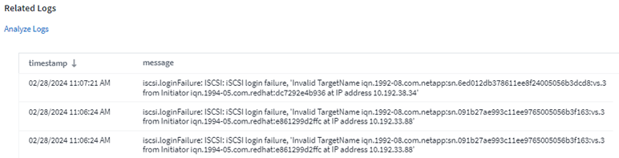
Recopilar datos de switch de ONTAP
Cloud Insights puede recopilar datos de los switches back-end del sistema ONTAP; simplemente habilite la recopilación en la sección Configuración avanzada del recopilador de datos y asegúrese de que el sistema ONTAP esté configurado para proporcionar "información del interruptor" y tiene lo apropiado permisos configurado.
API de recopilador de datos de seguridad de carga de trabajo
En entornos de gran tamaño, puede automatizar la creación de recopiladores de seguridad de carga de trabajo con la nueva API de recopiladores de datos. Navegue hasta Admin > API Access > API Documentation y seleccione el tipo de API Workload Security para obtener más información.
A enero de 2024
Pruebe las funciones de Cloud Insights que aún no ha utilizado
Además de su prueba inicial de Cloud Insights, también puede aprovechar "Pruebas de módulos". Por ejemplo, si está suscrito a Cloud Insights y ha supervisado el almacenamiento y las máquinas virtuales, al agregar Kubernetes a su entorno, entrará automáticamente en una prueba de 30 días de Kubernetes Observability. El uso de la unidad gestionada de Kubernetes Observability no contará con respecto a tu derecho suscrito hasta que finalice el período de prueba.
¿Cuál es el nivel de salud de mis cargas de trabajo?
El estado de la carga de trabajo está disponible de un vistazo en la página Kubernetes > Explorar > Cargas de trabajo, de modo que puede ver rápidamente qué cargas de trabajo se ejecutan bien y cuáles pueden necesitar ayuda.

Actualizaciones del recopilador de datos
Identificación de dominio de datos
El recopilador de Data Domain se ha mejorado para identificar mejor los sistemas de alta disponibilidad para la durabilidad en los eventos de conmutación por error. Este cambio provocará una reidentificación una vez de los dispositivos de Data Domain en los sistemas de alta disponibilidad, lo que provocará que se eliminen las anotaciones en esos activos (porque estas matrices se volverán a identificar). Tendrá que volver a adjuntar anotaciones a sus objetos de Data Domain.
Algoritmo DE APRENDIZAJE AUTOMÁTICO con detección de ransomware mejorado
Workload Security incluye un nuevo algoritmo de APRENDIZAJE AUTOMÁTICO de detección de ransomware de 2nd generación para detectar los ataques más sofisticados de forma más rápida y precisa.
“Estacionalidad” de los comportamientos: El comportamiento de fin de semana puede seguir patrones diferentes de los días de la semana, o el comportamiento de la mañana a partir de la tarde. Los algoritmos de seguridad de la carga de trabajo tienen en cuenta esta estacionalidad.
Diciembre de 2023
Cambie el análisis de un vistazo
Kubernetes "Cambie el análisis" Te ofrece una vista integral de los cambios recientes en tu entorno de Kubernetes. Tiene a su alcance las alertas y el estado de la implementación. Con Change Analytics, puede realizar un seguimiento de cada cambio de implementación y configuración, y correlacionarlo con el estado y el rendimiento de los servicios, la infraestructura y los clústeres de K8s.

Panel de rendimiento de carga de trabajo de Kubernetes
El rendimiento de las cargas de trabajo está disponible en un vistazo en la completa consola Rendimiento de cargas de trabajo de Kubernetes. Vea rápidamente gráficos de tendencias de volumen, rendimiento, latencia y retransmisión, así como una tabla de tráfico de carga de trabajo para cada espacio de nombres del entorno. Los filtros permiten enfocar fácilmente las áreas de interés.


Detalles de consulta en una pantalla
En una consulta, al seleccionar una fila se abre un panel lateral que muestra los detalles de atributos, anotaciones y métricas de la fila seleccionada, proporcionando información útil sin necesidad de profundizar en la página de destino del objeto. Los enlaces de la fila o el panel lateral permiten una fácil navegación.

Actualizaciones del recopilador de datos:
-
Brocade FOS REST: Este coleccionista se ha retirado de “Preview” y ahora está disponible en general. Algunas cosas a tener en cuenta:
-
FOS introdujo su API REST con FOS 8,2. Pero algunas funciones como el enrutamiento solo recibieron funcionalidades de API DE REST con 9,0.
-
Si tiene una estructura que consta de activos FOS mixtos 8,2 veces superior, así como algunos < 8,2, el recopilador REST FOS de Cloud Insights no podrá detectar esos activos antiguos. Puede editar el recopilador REST DE FOS y crear una lista delimitada por comas de la dirección IPv4 de esos dispositivos para su exclusión de ese recopilador.
-
-
SELINUX: Cloud Insights incluye mejoras en la instalación inicial de la Unidad de Adquisición de Linux para garantizar la solidez del funcionamiento en entornos Linux con la aplicación de SELINUX activada. Estas mejoras solo afectan a las implementaciones de NEW AU; si tiene problemas de SELinux relacionados con las actualizaciones de AU, póngase en contacto con el servicio de asistencia de NetApp para solucionar la configuración de SELinux.
Noviembre de 2023
Seguridad de la carga de trabajo: Poner en pausa/reanudar un recopilador
En Workload Security, puede poner en pausa un recopilador de datos si el recopilador se encuentra en estado Running. Abra el menú de tres puntos para el recopilador y seleccione PAUSE. Mientras el recopilador está en pausa, no se recopilan datos desde ONTAP y no se envía ningún dato del recopilador a ONTAP. Seleccione Reanudar para comenzar a recopilar de nuevo.
Información de soporte del nodo de almacenamiento
En la página de inicio de un nodo de almacenamiento, la sección User Data proporciona información de un vistazo sobre la oferta de soporte, el estado actual, el estado del soporte y la fecha de finalización de la garantía. Tenga en cuenta que Cloud Insights solo publica automáticamente esta información para los dispositivos NetApp. Tenga en cuenta también que estos campos de soporte son anotaciones, por lo que se pueden utilizar en consultas y paneles de control.

Asignar etiquetas de VMware a anotaciones de Cloud Insights
La "VMware" Data Collector le permite completar anotaciones de texto de Cloud Insights con etiquetas del mismo nombre que están configuradas en VMware.
Mejoras en la fiabilidad del recopilador de CLI de Brocade para FOS 9,1.1c y posterior firmware
En algunos switches Fibre Channel de Brocade que ejecutan el firmware 9,1.1c, la salida de ciertos comandos de la CLI puede anteponerse con el texto del banner de inicio de sesión «motd» o con advertencias para que los usuarios cambien las contraseñas predeterminadas. Se ha mejorado el recopilador de CLI de Brocade para ignorar estos dos tipos de texto extraño.
Antes de esta mejora, es probable que solo los switches FOS 9,1.1c sin estructuras virtuales presentes se detectaran con este tipo de recopilador.
Octubre de 2023
Seguridad de cargas de trabajo mejorada
La seguridad de la carga de trabajo se ha mejorado con lo siguiente:
-
Acceso denegado: La seguridad de la carga de trabajo se integra con ONTAP para recibir "Eventos de acceso denegado" y proporcionar una capa adicional de análisis y respuestas automáticas.
-
Tipos de archivos permitidos: Si se detecta un ataque de ransomware para una extensión de archivo conocida, esa extensión de archivo se puede agregar a un "tipos de archivo permitidos" lista para evitar alertas innecesarias.
Pruebas de módulos
Además de su prueba inicial de Cloud Insights, también puede aprovechar "Pruebas de módulos". Por ejemplo, si ya está suscrito a Infrastructure Observability pero está añadiendo Kubernetes a su entorno, entrará automáticamente en una prueba de 30 días de Kubernetes Observability. Solo se te cobrará por el uso de la unidad gestionada por Kubernetes Observability al final del período de prueba.
Restrinja el acceso a los dominios especificados
Los administradores y los propietarios de cuentas ahora tienen la capacidad de "Restrinja el acceso a Cloud Insights" para enviar los dominios de correo electrónico que especifiquen. Vaya a Admin > User Management y seleccione el botón Restringir Dominios.

Actualizaciones del recopilador de datos
Se han realizado los siguientes cambios en la unidad de adquisición/recopilación de datos:
-
Isilon / PowerScale REST: Se han añadido varios atributos y métricas nuevos a las capacidades de análisis mejoradas de Cloud Insights bajo el nombre emc_isilon.node_pool.*. Estos contadores y atributos permitirán a los usuarios crear consolas y supervisiones para el consumo de capacidad node_pool; los usuarios con clústeres de Isilon creados a partir de modelos de nodos de hardware distintos tendrán varios pools de nodos y comprender el consumo de capacidad total de HDD/SSD en el nivel de pool de nodos resulta útil para la supervisión y la planificación.
-
Rubrik Soporte de autenticación de “cuenta de servicio”: El recopilador de RUBRIK de Cloud Insights ahora admite la autenticación básica HTTP tradicional (nombre de usuario y contraseña), y el enfoque de cuenta de servicio de RUBRIK, que requiere un nombre de usuario + secreto + identificador de organización.
Septiembre de 2023
Encuentre fácilmente lo que desea en los registros
La consulta de registro (Observabilidad > Consultas de registro > +Nueva consulta de registro) incluye un número de "mejoras" para hacer la exploración de registros más fácil y más informativa.
Incluir/Excluir
Al filtrar por un valor, puede elegir fácilmente si desea incluir * o * excluir * resultados que coincidan con el filtro. Al seleccionar Excluir, se crea un filtro que NO ES <value>. Puede combinar los valores Incluir y Excluir en un único filtro.

Consulta avanzada
Consulta avanzada te da la oportunidad de crear filtros de “forma libre”, combinando o excluyendo valores usando Y, NO, O, comodines, etc.

La “Filtrar por” y la “Consulta Avanzada” son “Y juntas” para formar una sola consulta. Los resultados se muestran en la lista de resultados y en el gráfico.
Agrupación en el gráfico
Cuando selecciona un atributo de registro para Agrupar por, la lista y el gráfico muestran los resultados del filtro actual. En el gráfico, las columnas se agrupan en colores. Si pasa el ratón sobre una columna del gráfico, se mostrarán detalles sobre las entradas específicas, de forma similar a la información general que se muestra al expandir la leyenda del gráfico. En la leyenda, también puede elegir establecer un filtro Incluir o Excluir para una agrupación específica.

Panel de detalles de registro flotante
Al explorar los registros mediante la consulta de registro, al seleccionar una entrada de la lista se abre un panel de detalles para esa entrada. Ahora puede optar por mostrar ese panel deslizante flotante (es decir, que se muestra en el resto de la pantalla) o en la página (es decir, que se muestra como su propio marco dentro de la página). Para alternar entre estas vistas, seleccione el botón “En página / Flotante” en la esquina superior derecha del panel.

Contraer el menú
Puede contraer el menú de navegación Cloud Insights del lado izquierdo seleccionando el botón “Minimizar” debajo del menú. Mientras el menú está minimizado, pase el ratón sobre un icono para ver qué sección se abre; al seleccionar el icono se abre el menú y le llevará directamente a esa sección.

Mejoras en Data Collector
Cloud Insights ha hecho que sea más fácil mostrar y encontrar información del recopilador de datos:
-
El procesamiento de listas de recopiladores de datos es más eficiente, lo que significa que el tiempo que se tarda en mostrar y navegar por estas listas se reduce considerablemente. Si tiene un entorno grande con muchos recopiladores de datos, verá una mejora significativa al enumerar sus recopiladores de datos.
-
La matriz de soporte * Data Collector ha pasado de un archivo .PDF a una página basada en .HTML, de navegación más rápida y fácil de mantener. Consulte la nueva matriz aquí: https://docs.netapp.com/us-en/cloudinsights/reference_data_collector_support_matrix.html
Agosto de 2023
Recopilación de registros de Isilon/PowerScale y datos analíticos avanzados
Los recopiladores REST Isilon REST y PowerScale incluyen las siguientes mejoras:
-
Los eventos de registro de Isilon están disponibles para su uso en consultas y alertas
-
Los atributos analíticos avanzados de Isilon están disponibles para su uso en consultas, paneles de control y alertas:
-
emc_isilon.cluster
-
emc_isilon.node
-
emc_isilon.node_disk
-
emc_isilon.net_iface
-
Estos están habilitados de forma predeterminada para los usuarios de los recopiladores REST DE Isilon y/o PowerScale. NetApp anima a los usuarios del recopilador basado en CLI de Isilon a migrar al nuevo recopilador basado en API de REST para recibir mejoras como las anteriores.
Mapa de cargas de trabajo mejorado
El mapa de carga de trabajo es más utilizable y menos ruidoso; agrupa todos los servicios externos similares en un nodo si se comunican con las mismas cargas de trabajo, lo que reduce la complejidad del gráfico y facilita la comprensión de cómo se interconectan los servicios.
Al seleccionar un nodo agrupado, se mostrará una tabla detallada con las métricas de tráfico de red para cada servicio externo relevante para ese nodo.
Ajuste del uso de la unidad gestionada de Kubernetes
En caso de que un recurso informático en tu entorno de clúster de Kubernetes cuente tanto con el operador de supervisión de Kubernetes de NetApp como con un recopilador de datos de infraestructura subyacente (por ejemplo, VMware), el uso de estos recursos se ajustará para garantizar el recuento de unidades gestionadas más eficiente. Puedes ver los ajustes de MU de Kubernetes en la página Admin > Subscription, tanto en las pestañas Summary como Usage.
Separador Resumen:

Pestaña Uso:

Cambios de recopilador/adquisición:
Se han realizado los siguientes cambios en la unidad de adquisición/recopilación de datos:
-
Las unidades de adquisición ahora admiten RHEL 8,7.
Menús mejorados
Hemos actualizado el menú de navegación de la izquierda para respaldar mejor los flujos de trabajo de nuestros clientes. Los nuevos elementos de nivel superior, como Kubernetes, proporcionan acceso acelerado a lo que el cliente necesita, y una consola de administradores consolidada soporta el rol de propietario de inquilino.
A continuación se muestran algunos ejemplos adicionales de los cambios:
-
El menú de nivel superior Observability muestra la detección de datos, alertas y consultas de registro
-
La funcionalidad de acceso a la API para la observabilidad y la seguridad de la carga de trabajo se encuentran en un menú
-
Del mismo modo para la funcionalidad de Observabilidad y Seguridad de la Carga de Trabajo 'Notificaciones', ahora también en un solo menú
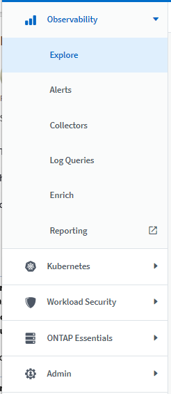
Aquí hay una breve lista de las características que puede encontrar en cada menú:
Observabilidad:
-
Explorar (paneles, consultas métricas, informes de infraestructura)
-
Alertas (Monitores y Alertas)
-
Colectores (recolectores de datos y unidades de adquisición)
-
Consultas de registro
-
Enriquecer (Reglas de anotaciones y anotaciones, Aplicaciones, Resolución de dispositivos)
-
Creación de informes
Kubernetes:
-
Exploración en cluster y Mapa de red
Seguridad de carga de trabajo:
-
Alertas
-
Ciencia forense
-
Colectores
-
Normativas
Aspectos básicos de ONTAP:
-
Protección de datos
-
Seguridad
-
Alertas
-
De almacenamiento
-
Redes
-
Cargas de trabajo
*VMware
Admin.:
-
Acceso API
-
Auditoría
-
Notificaciones
-
Información sobre suscripciones
-
Gestión de usuarios
Julio de 2023
Mostrar cambios recientes
Las páginas de destino de Data Collector ahora incluyen una lista de cambios recientes. Solo tiene que hacer clic en el botón «Cambios recientes» situado en la parte inferior de cualquier página de destino del recopilador de datos para mostrar los cambios recientes del recopilador de datos.

Mejoras del operador
Se han realizado las siguientes mejoras en "Operador de Kubernetes" instalación:
-
Opción para omitir la recopilación de métricas de Docker
-
Posibilidad de añadir y personalizar toleraciones a telegraf Daemonsets y Replicasets
Insight: Recupere el almacenamiento de datos fríos
La "Recupere el conocimiento del almacenamiento de datos fríos de ONTAP" Ahora admite FlexGroups, y ahora está disponible para todos los clientes.
Firma de imagen del operador
Para los clientes que utilizan un repositorio privado para su operador de supervisión de Kubernetes de NetApp, ahora puede copiar la clave pública de firma de imagen durante la instalación del operador, lo que le permite confirmar la autenticidad del software descargado. Seleccione el botón Copiar clave pública de firma de imagen durante el paso opcional Cargar la imagen del operador en su repositorio privado.

Agregación, Formato Condicional y más para consultas
La agregación, la selección de unidades, el formato condicional y el cambio de nombre de columna son algunas de las características más útiles de un widget de tabla de panel de control, y ahora esas mismas características están disponibles para "Consultas".

Estas funciones ya están disponibles para datos de tipo de integración (Kubernetes, Métricas avanzadas de ONTAP, etc.) y próximamente estarán disponibles para objetos de Infraestructura (almacenamiento, volumen, switch, etc.).
API para auditoría
Ahora puedes usar una API para consultar o exportar eventos auditados. Vaya a Admin > API Access y seleccione el enlace API Documentation para obtener más información.
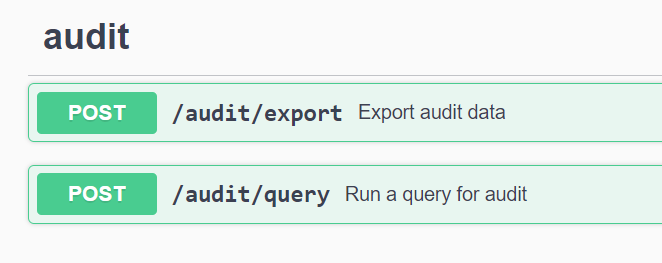
Recopilador de datos: Economía Trident
Cloud Insights ahora es compatible con el controlador de economía Trident, y obtiene estos beneficios:
-
Consigue visibilidad de las métricas de rendimiento y la asignación de qtrees de pod-to-ONTAP.
-
Proporciona una solución de problemas fluida y una navegación sencilla desde los pods de Kubernetes hasta el almacenamiento back-end
-
Detecte de forma proactiva los problemas de rendimiento de backend con los monitores
Junio de 2023
Compruebe su uso
A partir de junio de 2023, Cloud Insights ofrece un desglose del uso de las unidades gestionadas en función del conjunto de funciones. Ahora, puedes ver y supervisar rápidamente el uso de las unidades gestionadas (MU) para tu infraestructura, así como el uso de MU vinculado a Kubernetes.

La supervisión de la red de Kubernetes y el mapa están disponibles para todos
La "Rendimiento de la red de Kubernetes y Map" Simplifica la solución de problemas asignando dependencias entre cargas de trabajo de Kubernetes, proporcionando visibilidad en tiempo real de las latencias y anomalías del rendimiento de la red de Kubernetes para identificar los problemas de rendimiento antes de que afecten a los usuarios. Muchos clientes lo encontraron útil durante la vista previa, y ahora está disponible para que todo el mundo lo disfrute.
Cambios de recopilador/adquisición:
Se han realizado los siguientes cambios en la unidad de adquisición/recopilación de datos:
-
Los UM de dominio de datos y cohesión se miden a 40 TiB: 1 MU.
-
Las unidades de adquisición ahora son compatibles con RHEL y Rocky 9,0 y 9,1.
Nuevas consolas de aspectos básicos de ONTAP
Las siguientes consolas de ONTAP Essentials se han disponible en entornos de vista previa, y ahora están disponibles para todos:
-
Panel de seguridad
-
Consola de protección de datos (incluye descripciones de protección local y remota)
Monitores de sistema adicionales
Los siguientes monitores del sistema se incluyen con Cloud Insights:
-
Servicio FCP de máquina virtual de almacenamiento no disponible
-
Servicio iSCSI de máquina virtual de almacenamiento no disponible
Mayo de 2023
Instalación mejorada del operador de supervisión de Kubernetes
Instalación y configuración del "Operador de supervisión Kubernetes de NetApp" es más fácil que nunca con las siguientes mejoras:
-
Entorno Oracle "ajustes de configuración" se guardan en un único archivo de configuración autodocumentado.
-
Instrucciones paso a paso para cargar imágenes del operador de monitoreo de Kubernetes en su repositorio privado.
-
Fácil de actualizar con un solo comando para actualizar su supervisión de Kubernetes manteniendo configuraciones personalizadas.
-
Más protegidos: Las claves API gestionan los secretos de forma segura.
-
Fácil de integrar y poner en marcha con las herramientas de automatización de CI/CD.
Virtualización del almacenamiento
Cloud Insights puede diferenciar entre una cabina de almacenamiento que tenga almacenamiento local o virtualización de otras cabinas de almacenamiento. Esto le ofrece la capacidad de relacionar el coste y distinguir el rendimiento del interfaz hasta el back-end de la infraestructura.
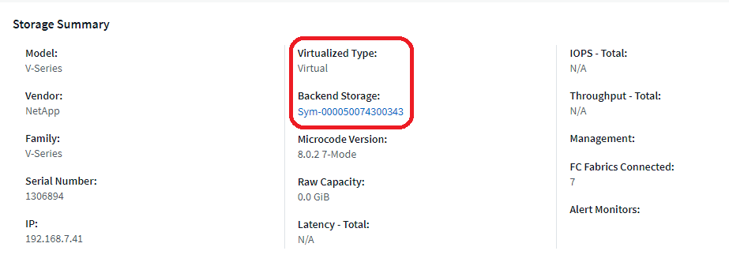
Nuevos parámetros de Webhook
Al crear un "Webhook" notificación, ahora puede incluir estos parámetros en su definición de webhook:
-
%%TriggeredOnKeys%%
-
%%TriggeredOnValues%%
Informes sobre datos de Kubernetes
Los datos de Kubernetes recopilados por Cloud Insights, incluidos los volúmenes persistentes (VP), PVC, cargas de trabajo, clústeres y espacios de nombres, ahora se encuentran disponibles para su uso en informes, lo que permite el pago por uso, tendencias, previsión, cálculos de TTF, Y otros informes empresariales sobre métricas para Kubernetes.
Monitores del sistema ONTAP predeterminados activados para nuevos clientes
Muchos monitores del sistema ONTAP están activados (es decir, resume) de forma predeterminada en los nuevos entornos Cloud Insights. Anteriormente, la mayoría de los monitores tenían por defecto el estado Paused. Debido a que las necesidades de negocio varían de una empresa a otra, siempre recomendamos echar un vistazo a la "monitores del sistema" en su entorno y pausar o reanudar cada uno según sus necesidades de alerta.
Abril de 2023
Supervisión y asignación del rendimiento de Kubernetes
La "Rendimiento de la red de Kubernetes y Map" Esta función simplifica la solución de problemas mediante la asignación de dependencias entre cargas de trabajo de Kubernetes. Proporciona visibilidad en tiempo real de las latencias y anomalías del rendimiento de la red de Kubernetes para identificar problemas de rendimiento antes de que afecten a los usuarios. Esta funcionalidad ayuda a las organizaciones a reducir los costes generales mediante el análisis y la auditoría de los flujos de tráfico de Kubernetes.
Características principales: • El mapa de carga de trabajo presenta los flujos y dependencias de las cargas de trabajo de Kubernetes y destaca los problemas de red y de rendimiento. • Supervisar el tráfico de red entre los pods de Kubernetes, las cargas de trabajo y los nodos; identifica la fuente del tráfico y los problemas de latencia. • Reduzca los costes generales analizando el tráfico de red entre zonas, entre regiones y entre zonas.
Mapa de cargas de trabajo en el que se muestran detalles de la presentación:

La supervisión y el mapa del rendimiento de Kubernetes están disponibles como "Vista previa" función.
Consola de seguridad de aspectos básicos de ONTAP
La "Panel de seguridad" le ofrece una visión instantánea de su situación de seguridad actual y muestra gráficos de cifrado de volúmenes de hardware y software, estado antiransomware y métodos de autenticación de clústeres. El panel de control de seguridad está disponible como "Vista previa" función.

Recupere el almacenamiento de datos fríos ONTAP
La información Reclaim ONTAP Cold Storage proporciona datos sobre capacidad fría, ahorros potenciales de costes/energía, y elementos de acción recomendados para volúmenes en sistemas de ONTAP.

Con este Insight, puede responder a preguntas como:
-
¿Qué cantidad de datos inactivos en un clúster de almacenamiento se ubican en discos SSD de alto coste, (b) discos HDD y (c) discos virtuales?
-
¿Cuáles son las cargas de trabajo que más contribuyen al almacenamiento no optimizado?
-
¿Cuál es la duración (en días) de los datos inactivos en una carga de trabajo determinada?
Reclaim ONTAP Almacenamiento en frío se considera un "Preview" y, por lo tanto, está sujeta a cambios.
La notificación de suscripción también controla los mensajes de banner
La configuración de destinatarios para las notificaciones de suscripción (Admin > Notifications) ahora también controla quién verá las notificaciones del banner del producto relacionadas con la suscripción.

Los informes tienen un aspecto nuevo
Notará que las pantallas de informes de Cloud Insights tienen un nuevo aspecto y que algunas de las opciones de navegación del menú han cambiado. Estas pantallas y cambios de navegación se han actualizado en la versión actual "Documentación de informes".

Monitores en pausa de forma predeterminada
En el caso de nuevos entornos de Cloud Insights, tenga en cuenta esto "monitores definidos por el sistema" no enviar notificaciones de alerta de forma predeterminada. Tendrá que habilitar las notificaciones para cualquier monitor que desee que le avise, agregando uno o más métodos de entrega para el monitor. Para los entornos Cloud Insights existentes, se ha eliminado la lista de destinatarios de notificaciones global por defecto para todos los monitores definidos por el sistema que se encuentren actualmente en estado Paused. Las notificaciones definidas por el usuario permanecen sin cambios, al igual que la configuración de notificaciones para los monitores definidos por el sistema actualmente activos.
¿Está buscando la pestaña de medición de API?
La medición de API se ha movido de la página Suscripción a la página Admin > Acceso a API.
Marzo de 2023
Cloud Connection para ONTAP 9.9 o posterior obsoleto
El recopilador de datos de Cloud Connection para ONTAP 9.9+ está obsoleto. A partir del 4 de abril de 2023, los recopiladores de datos de Cloud Connection en su entorno ya no recopilarán datos y, en su lugar, presentarán un error al realizar el sondeo. El recopilador de datos de Cloud Connection se eliminará por completo de Cloud Insights en una actualización posterior.
Antes del 4 de abril de 2023, es obligatorio configurar un nuevo recopilador de datos de software de gestión de datos de ONTAP de NetApp para cualquier sistema ONTAP que esté recopilado actualmente por Cloud Connection. "Leer más".
Enero de 2023
Nuevos monitores de registro
Hemos añadido casi dos docenas "monitores del sistema adicionales" alerta de enlaces de interconexión rotos, problemas de latido del corazón, y más. Además, se añadieron tres nuevos monitores de registro de protección de datos para alertar sobre la resincronización automática de SnapMirror, el mirroring de MetroCluster y los cambios en la resincronización de reflejos de FabricPool.
Tenga en cuenta que algunos de estos monitores Enabled de forma predeterminada; debe PAUSE si no desea avisarlos. Tenga también en cuenta que estos monitores no están configurados para entregar notificaciones; debe configurar destinatarios de notificaciones en estos monitores si desea enviar alertas por correo electrónico o por enlace web.
Exportación .CSV para todos los widgets de tabla de consola
Garantizar la accesibilidad a sus datos es fundamental, por lo que hemos realizado la exportación de .CSV disponible para todas las consultas métricas, widgets de tabla de panel y páginas de destino de objetos, independientemente del tipo de datos (activo o integración) que esté consultando.
Las personalizaciones de datos, como la selección de columnas, el cambio de nombre de columnas y las conversiones de unidades, también se incluyen ahora en la nueva funcionalidad de exportación.
Diciembre de 2022
Explore la protección contra ransomware y otras funciones de seguridad durante la prueba de Cloud Insights
A partir de hoy, la suscripción a una nueva prueba de Cloud Insights le permite explorar características de seguridad como la detección de ransomware y la política de respuesta de bloqueo de usuarios automatizada. Si no se ha registrado para su prueba, hágalo hoy mismo.
Las cargas de trabajo de Kubernetes tienen su propia página de destino
Las cargas de trabajo son una parte fundamental del entorno de Kubernetes, por lo que ahora Cloud Insights proporciona páginas de destino para dichas cargas de trabajo. Desde aquí, puede ver, explorar y solucionar los problemas que afectan a sus cargas de trabajo de Kubernetes.

Compruebe sus sumas de comprobación
Nos pidió que le proporcionáramos valores de suma de comprobación durante la instalación del agente para Windows y Linux y creemos que es una gran idea. Así que aquí están:

Registrar mejoras de alertas
Agrupar por
Al crear o editar un Monitor de registro, ahora puede establecer atributos "Agrupar por" para permitir alertas más centradas. Busque los atributos "Agrupar por" debajo de la configuración "filtrar" en la definición del monitor.

Este cambio lleva a los monitores métricos y los monitores de registro a la paridad de funciones mediante la normalización del aspecto “Agrupar por” de las definiciones de monitor. Esta paridad permitirá a los clientes clonar/duplicar todos monitores predeterminados definidos por el sistema para mayor personalización.
Duplicando
Ahora puede clonar (duplicar) los monitores Change Log, Kubernetes Log y Data Collector Log. Esto crea un nuevo monitor de registro personalizado que se puede modificar a sus definiciones específicas.

11 nuevos monitores ONTAP predeterminados que cubren SnapMirror para la continuidad del negocio
Hemos añadido casi una docena de nuevos "monitores del sistema" Para SnapMirror para la continuidad de negocio (SMBC), que alerta sobre los cambios en los certificados de SMBC y de los mediadores de ONTAP.
Noviembre de 2022
Más de 40 nuevos monitores de seguridad, recopilación de datos y CVO
Hemos añadido docenas de nuevos monitores definidos por el sistema para alertarle de posibles problemas con Cloud Volumes, Security y Data Protection. Obtenga más información sobre estos monitores "aquí".
Octubre de 2022
Mejor y más precisa detección de ransomware con la integración de protección de Ransomware autónoma de ONTAP
Cloud Secure mejora la detección de ransomware mediante la integración con ONTAP "Protección autónoma de ransomware" (ARP).
Cloud Secure recibe eventos ONTAP ARP sobre la actividad potencial de cifrado de archivos de volúmenes, y.
-
Correlaciona los eventos de cifrado de volúmenes con la actividad de usuario para identificar quién está causando los daños,
-
Implementa políticas de respuesta automática para bloquear el ataque,
-
Identifica los archivos que se vieron afectados, lo que ayuda a recuperarse más rápidamente y a realizar investigaciones de infracciones de datos.
Septiembre de 2022
Monitores disponibles en Basic Edition
ONTAP "Monitores predeterminados" Ahora disponible para su uso en la edición básica de Cloud Insights. Esto incluye más de 70 monitores de infraestructura y 30 ejemplos de carga de trabajo.
Consolas de alimentación y StorageGRID de ONTAP
La galería del panel incluye un nuevo panel de control para la potencia y temperatura de ONTAP, así como cuatro paneles para StorageGRID. Si su entorno está recopilando métricas de energía de ONTAP y/o datos de StorageGRID, importe estos paneles seleccionando +de la Galería.
Visibilidad del umbral de un vistazo en las tablas
El formato condicional permite establecer y resaltar umbrales de nivel de advertencia y de nivel crítico en los widgets de tabla, lo que proporciona visibilidad instantánea a los valores atípicos y puntos de datos excepcionales.

Monitor de seguridad
Cloud Insights puede alertarle cuando detecta que está deshabilitado el modo FIPS en el sistema ONTAP. Más información acerca de "Monitores del sistema", Y vea este espacio para más monitores de seguridad, ¡próximamente!
Chatee desde cualquier lugar
Chatee con un especialista de soporte de NetApp desde cualquier pantalla de Cloud Insights seleccionando el nuevo vínculo Ayuda > Chat en directo. Puede obtener ayuda en "?" en la parte superior derecha de la pantalla.

Información más visible
Si su entorno está experimentando una "Insight" Como Shared resources under stress o Kubernetes Namespaces que se están quedando sin espacio, las páginas de destino de los activos para los recursos afectados ahora incluyen enlaces a la propia Insight, lo que proporciona una exploración y solución de problemas más rápidas.
Nuevos recolectores de datos
-
Amazon S3 (disponible en vista previa)
-
Brocade FOS 9.0.x
-
PowerStore 3.0.0.0 de Dell/EMC
Otras actualizaciones del recopilador de datos
Todos los orígenes de datos están ahora optimizados para reanudar las encuestas de rendimiento después de las actualizaciones y/o revisiones de la unidad de adquisición.
Soporte del sistema operativo
Los siguientes sistemas operativos son compatibles con las unidades de adquisición de Cloud Insights, además de los mismos "ya es compatible":
-
Red Hat Enterprise Linux 8.5, 8.6
Agosto de 2022
¡Cloud Insights tiene un nuevo aspecto!
A partir de este mes, "Monitor and Optimize" ha sido renombrado Observabilidad. Aquí encontrará todas sus funciones favoritas, como Paneles, consultas, Alertas y Informes. Además, busque Cloud Secure en el nuevo menú Seguridad. Tenga en cuenta que sólo los menús han cambiado; la funcionalidad de la función sigue siendo la misma.

¿Busca el menú Ayuda?
Ayuda ahora vive en la parte superior derecha de la pantalla.
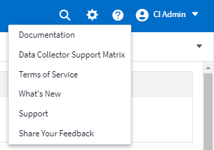
¿No está seguro de por dónde empezar? Echa un vistazo a los aspectos básicos de ONTAP.
"Aspectos básicos de ONTAP" Es un conjunto de consolas y flujos de trabajo que ofrecen vistas detalladas de sus inventarios, cargas de trabajo y protección de datos de ONTAP de NetApp, incluidas predicciones completas sobre la capacidad de almacenamiento y el rendimiento. Incluso puede ver si alguna controladora se está ejecutando con una utilización elevada. ONTAP Essentials es el lugar perfecto para todas sus necesidades de supervisión de NetApp ONTAP.
ONTAP Essentials, disponible en todas las ediciones, está diseñado para ser intuitivo a los operadores y administradores de ONTAP existentes, lo que facilita la transición de ActiveIQ Unified Manager a herramientas de gestión basadas en servicios.

Las familias de datos de almacenamiento se fusionan
Lo ha pedido y ahora lo tiene. Las unidades de datos base-2 y base-10 de almacenamiento ahora se combinan en una familia, desde bits y bytes hasta bits y terabytes, lo que facilita la visualización de datos en los paneles. Los índices de datos también son ahora una gran familia propia.

¿Qué potencia está utilizando mi almacenamiento?
Muestre y supervise su bandeja de almacenamiento ONTAP y el consumo de alimentación de los nodos, la temperatura y la velocidad del ventilador usando las métricas netapp_ontap.Storage_shelf, netapp_ontap.System_node y netapp_ontap.cluster (solo consumo de alimentación).

Operaciones graduadas de Vista previa
Las siguientes funciones ya no se han introducido en la versión preliminar y están ahora disponibles para todos los clientes:
Característica |
Descripción |
Los espacios de nombres de Kubernetes se están quedando sin espacio |
La Kubernetes Namespaces se está quedando sin espacio Insight le ofrece una vista de las cargas de trabajo en los espacios de nombres de Kubernetes que corren el riesgo de quedarse sin espacio, con una estimación del número de días que quedan antes de que se llene cada espacio."Leer más" |
Recurso compartido bajo estrés |
El Shared Resource under stress Insight utiliza IA/ML para identificar automáticamente dónde la contención de recursos está provocando la degradación del rendimiento en su entorno, resalta cualquier carga de trabajo afectada por él y proporciona acciones recomendadas para solucionar los problemas de rendimiento con mayor rapidez."Leer más" |
Cloud Secure: Bloquee el acceso de los usuarios ante cualquier ataque |
Mayor protección de los datos esenciales para la empresa con la capacidad de bloquear el acceso de los usuarios cuando se detecte un ataque. El acceso se puede bloquear automáticamente, mediante Directivas de respuesta automática o manualmente desde las páginas de alerta o de detalles del usuario."Leer más" |
¿Cómo está la salud de mi recolección de datos?
Cloud Insights proporciona dos nuevos monitores de latido para sus unidades de adquisición, así como dos monitores para avisarle de fallos del recopilador de datos. Estos pueden utilizarse para avisarle rápidamente de problemas relacionados con la recopilación de datos.
Los siguientes monitores están ahora disponibles en el grupo de monitores Data Collection:
-
Unidad de adquisición Heartbeat-Critical
-
Advertencia de latido de la unidad de adquisición
-
Error del recopilador
-
Advertencia del recolector
Tenga en cuenta que estos monitores están en estado pausado de forma predeterminada. Actívela para que se les avise sobre problemas relacionados con la recopilación de datos.
Fichas de la API de renovación automática
Los tokens de acceso API ahora se pueden establecer para la renovación automática. Al habilitar esta función, se generarán automáticamente tokens de acceso a API nuevos/actualizados para tokens que expiren. Los agentes Cloud Insights que utilizan un token que está a punto de caducar se actualizarán automáticamente para utilizar el token de acceso de API nuevo/actualizado correspondiente, lo que les permite continuar funcionando sin problemas. Sólo tiene que marcar la casilla “renovar símbolo automáticamente” al crear el token. Esta función actualmente es compatible con los agentes de Cloud Insights que se ejecutan en la plataforma Kubernetes con el último operador de supervisión Kubernetes de NetApp.
Basic Edition le ofrece más que antes
Su versión de prueba finaliza, pero aún no está seguro de si una suscripción es adecuada para usted? Basic Edition siempre le ha dado la oportunidad de continuar utilizando Cloud Insights con su recopilador de datos actual de ONTAP, pero ahora también puede seguir capturando datos de versión, topología e IOPS/rendimiento/latencia de VMware. Los clientes de NetApp que tengan soporte Premium en sus sistemas de almacenamiento también podrán disfrutar de soporte para Cloud Insights.
¿Listo para saber más?
Consulte la sección del Centro de aprendizaje de la página de ayuda > soporte para obtener enlaces a las ofertas de los cursos de NetApp University Cloud Insights.
Soporte del sistema operativo
El siguiente sistema operativo es compatible con las unidades de adquisición de Cloud Insights, además de las mismas "ya es compatible":
-
Windows 11
Junio de 2022
Saturación del clúster de Kubernetes y otros detalles
Cloud Insights hace que resulte más fácil que nunca explorar su entorno Kubernetes, con una página mejorada de detalles de clúster que proporciona detalles de saturación así como una vista más limpia de espacios de nombres y cargas de trabajo.

La página de lista Cluster también ofrece una vista rápida de la saturación, además del número de nodos, pod, espacios de nombres y cargas de trabajo:

¿Qué edad tiene su clúster de Kubernetes?
¿Su clúster acaba de empezar en el mundo o ha experimentado una larga vida digital? Se ha añadido Age como métrica de tiempo recopilada para los nodos de Kubernetes.

Previsión del tiempo hasta el nivel total de la capacidad
Cloud Insights proporciona una consola que prevé el número de días hasta que se agote la capacidad de cada volumen interno supervisado. Estos valores pueden ayudar a reducir significativamente el riesgo de una interrupción del servicio.

Los contadores TTF también están disponibles para almacenamiento, pool de almacenamiento y volumen. Siga observando este espacio para ver paneles adicionales para estos objetos.
Tenga en cuenta que la previsión de tiempo a nivel completo se está saldando de Preview y se implementará a todos los clientes.
¿Qué ha cambiado en mi entorno?
Las entradas del registro de cambios de ONTAP se pueden ver en el explorador de registros.

Soporte del sistema operativo
Los siguientes sistemas operativos son compatibles con las unidades de adquisición de Cloud Insights, además de los mismos "ya es compatible":
-
CentOS Stream 9
-
Windows 2022
Agente de Telegraf actualizado
El agente para la ingestión de datos de integración de telegraf se ha actualizado a la versión 1.22.3, con mejoras de rendimiento y seguridad. Los usuarios que deseen actualizar pueden consultar la sección de actualización correspondiente de "Instalación del agente" documentación. Las versiones anteriores del agente seguirán funcionando sin que se requiera ninguna acción del usuario.
Operaciones de vista previa
Cloud Insights destaca con regularidad diversas funciones de previsualización nuevas y interesantes. Si está interesado en previsualizar una o más de estas funciones, póngase en contacto con su "Equipo de ventas de NetApp" si quiere más información.
Característica |
Descripción |
Los espacios de nombres de Kubernetes se están quedando sin espacio |
La Kubernetes Namespaces se está quedando sin espacio Insight le ofrece una vista de las cargas de trabajo en los espacios de nombres de Kubernetes que corren el riesgo de quedarse sin espacio, con una estimación del número de días que quedan antes de que se llene cada espacio."Leer más" |
Cloud Secure: Bloquear el acceso de los usuarios a ataques |
Mayor protección de los datos esenciales para la empresa con la capacidad de bloquear el acceso de los usuarios cuando se detecte un ataque. El acceso se puede bloquear automáticamente, mediante Directivas de respuesta automática o manualmente desde las páginas de alerta o de detalles del usuario."Leer más" |
Recurso compartido bajo estrés |
El Shared Resource under stress Insight utiliza IA/ML para identificar automáticamente dónde la contención de recursos está provocando la degradación del rendimiento en su entorno, resalta cualquier carga de trabajo afectada por él y proporciona acciones recomendadas para solucionar los problemas de rendimiento con mayor rapidez."Leer más" |
Mayo de 2022
Chatee en directo con el soporte de NetApp
Ahora puede Chatear en directo con el personal de soporte de NetApp. En la página Ayuda > Soporte, simplemente haga clic en el icono Chat o haga clic en Chat en la sección "Contacto" para iniciar una sesión de chat. El soporte de chat está disponible los días laborables de EE.UU. Para usuarios de Standard y Premium Edition.

Operador de Kubernetes
Le hemos facilitado la puesta en marcha con el avanzado explorador de clúster y supervisión de Kubernetes de Cloud Insights.
La "Operador de supervisión Kubernetes de NetApp" (NKMO) es el método preferido para la instalación de Kubernetes para Cloud Insights Insights, para obtener una configuración más flexible de la supervisión en menos pasos, así como oportunidades mejoradas de supervisión de otro software que se ejecuta en el clúster de K8S.
Haga clic en el enlace anterior para obtener más información y requisitos previos
Administrar usuarios e invitaciones con API
Ahora puede gestionar usuarios e invitaciones mediante la potente API de Cloud Insights. Siga leyendo en el "Documentación de API de Swagger".
Alertas de recopilación de datos
¡No se pierda las métricas críticas debido a un colector fallido!
Es más fácil que nunca hacer un seguimiento de sus recopiladores de datos con nuevo "alertas" para errores en la unidad de captación y recopilación de datos. Tenga en cuenta que estos monitores se pausan de forma predeterminada. Para activar, desplácese a la página de monitores y localice y reanude “Acquisition Unit Shutdown” (Apagado) y “Coleccionista failed” (colector fallido).
Emita alertas cuando se produzcan cambios en el almacenamiento ONTAP
¡No deje que cambios inesperados en el almacenamiento conduzcan a interrupciones!
Ahora puede configurar Cloud Insights para que emita alertas cuando se detectan la modificación o la eliminación de FlexVols, nodos y SVM en sistemas ONTAP.
Operaciones de vista previa
Cloud Insights destaca con regularidad diversas funciones de previsualización nuevas y interesantes. Si está interesado en previsualizar una o más de estas funciones, póngase en contacto con su "Equipo de ventas de NetApp" si quiere más información.
Característica |
Descripción |
Los espacios de nombres de Kubernetes se están quedando sin espacio |
La Kubernetes Namespaces se está quedando sin espacio Insight le ofrece una vista de las cargas de trabajo en los espacios de nombres de Kubernetes que corren el riesgo de quedarse sin espacio, con una estimación del número de días que quedan antes de que se llene cada espacio."Leer más" |
Previsión del tiempo total de capacidad de volumen interno y volumen |
Cloud Insights puede procrear la cantidad de días hasta que se agote la capacidad de cada volumen interno y volumen supervisado. Este valor puede ayudar a reducir significativamente el riesgo de una interrupción del servicio. |
Cloud Secure: Bloquear el acceso de los usuarios a ataques |
Mayor protección de los datos esenciales para la empresa con la capacidad de bloquear el acceso de los usuarios cuando se detecte un ataque. El acceso se puede bloquear automáticamente, mediante Directivas de respuesta automática o manualmente desde las páginas de alerta o de detalles del usuario."Leer más" |
Recurso compartido bajo estrés |
El Shared Resource under stress Insight utiliza IA/ML para identificar automáticamente dónde la contención de recursos está provocando la degradación del rendimiento en su entorno, resalta cualquier carga de trabajo afectada por él y proporciona acciones recomendadas para solucionar los problemas de rendimiento con mayor rapidez."Leer más" |
Abril de 2022
Comparta sus comentarios
Queremos que tu colaboración sea de ayuda para dar forma a Cloud Insights. Gana puntos y premios participando en el programa Información para la acción de NetApp. "Regístrate ahora"!
Se ha actualizado el Editor de paneles
Hemos revisado nuestras herramientas de creación de paneles para que le resulte más fácil visualizar sus datos con mayor rapidez. Desplácese a la página “Paneles” de Cloud Insights para editar un panel existente, agregar uno de nuestra galería de paneles o crear un nuevo panel propio para comprobarlo.

También se ha introducido un nuevo método de agregación Count. Al agrupar datos en los widgets de gráfico de barras, gráfico de columnas y gráfico circular, puede mostrar rápida y fácilmente el número de objetos relevantes para la métrica seleccionada.

Además, ahora los gráficos de líneas permiten seleccionar uno de los tres "interpolación" métodos:
-
Ninguna: No se realiza ninguna interpolación
-
Lineal: Interpola un punto de datos entre los puntos existentes
-
Stair - utiliza el punto de datos anterior como punto de datos interpolado
Supervisión mejorada para su infraestructura de Kubernetes
Cloud Insights le mantiene informado sobre los cambios en su entorno Kubernetes al advertirle cuando se crean o se eliminan pods, demonsets y replicas, así como cuando se crean nuevas puestas en marcha. Kubernetes supervisa de forma predeterminada el estado paused, por lo que debe habilitar solo los específicos que necesite.
Operaciones de vista previa
Cloud Insights destaca con regularidad diversas funciones de previsualización nuevas y interesantes. Si está interesado en previsualizar una o más de estas funciones, póngase en contacto con su "Equipo de ventas de NetApp" si quiere más información.
Característica |
Descripción |
Previsión del tiempo total de capacidad de volumen interno y volumen |
Cloud Insights puede procrear la cantidad de días hasta que se agote la capacidad de cada volumen interno y volumen supervisado. Este valor puede ayudar a reducir significativamente el riesgo de una interrupción del servicio. |
Cloud Secure: Bloquear el acceso de los usuarios a ataques |
Mayor protección de los datos esenciales para la empresa con la capacidad de bloquear el acceso de los usuarios cuando se detecte un ataque. El acceso se puede bloquear automáticamente, mediante Directivas de respuesta automática o manualmente desde las páginas de alerta o de detalles del usuario."Leer más" |
Recurso compartido bajo estrés |
El recurso compartido Insight sometido a estrés usa IA/ML para identificar automáticamente dónde la contención de recursos está provocando la degradación del rendimiento en su entorno, resalta cualquier carga de trabajo afectada por él y proporciona acciones recomendadas para solucionar los problemas de rendimiento con mayor rapidez."Leer más" |
Nuevo recopilador de datos
-
Cohesity SmartFiles - este colector basado en la API REST adquirirá un clúster de Cohesity, descubriendo las “views” (como volúmenes internos de CI), los distintos nodos, así como recopilar métricas de rendimiento.
Otras actualizaciones del recopilador de datos
Se ha mejorado la recopilación y visualización de datos de rendimiento en los siguientes recopiladores de datos:
-
Interfaz de línea de comandos Brocade
-
Dell/EMC VPlex, PowerStore, Isilon/PowerScale, CLI de VNX Block/Clariion, XtremIO Unidad/VNXe
-
FlashArray a Pure
Estas mejoras en el rendimiento ya están disponibles en todos los recopiladores de datos de NetApp, así como en VMware y Cisco, y se implantarán en el resto de recopiladores de datos en los próximos meses.
Marzo de 2022
Conexión de cloud para ONTAP 9.9 o posterior
La "Conexión cloud de NetApp para ONTAP 9.9 o posterior" el recopilador de datos elimina la necesidad de instalar una unidad de adquisición externa, lo que simplifica la solución de problemas, el mantenimiento y la implementación inicial.
Nuevo FSX para los monitores ONTAP de NetApp
La supervisión de FSX para el entorno ONTAP de NetApp es fácil con las novedades "monitores definidos por el sistema" tanto para la infraestructura (métricas) como para las cargas de trabajo (registros).


Nuevas funciones de Cloud Secure disponibles para todos
Su entorno es más seguro que nunca con las siguientes funciones de Cloud Secure disponibles de forma general:
Característica |
Descripción |
Destrucción de datos: Detección de ataques de eliminación de archivos |
Detecte la actividad de eliminación de archivos a gran escala anómala, bloquee el acceso a archivos malintencionados por parte de usuarios malintencionados y realice snapshots automáticas con políticas de respuesta automática. |
Notificaciones separadas para Advertencias y alertas |
Las notificaciones de alerta y advertencia se pueden enviar a destinatarios independientes, lo que garantiza que el equipo adecuado esté informado |
Agente de Telegraf actualizado
El agente para la ingestión de datos de integración de telegraf se ha actualizado a la versión 1.21.2, con mejoras de rendimiento y seguridad. Los usuarios que deseen actualizar pueden consultar la sección de actualización correspondiente de "Instalación del agente" documentación. Las versiones anteriores del agente seguirán funcionando sin que se requiera ninguna acción del usuario.
Actualizaciones del recopilador de datos
-
El recopilador de datos de switches Fibre Channel de Broadcom se ha optimizado para reducir el número de comandos de la CLI emitidos con cada sondeo de inventario.
Febrero de 2022
Cloud Insights soluciona las vulnerabilidades de Apache Log4j
La seguridad del cliente es una de las principales prioridades de NetApp. Cloud Insights incluye actualizaciones de sus bibliotecas de software para abordar las vulnerabilidades recientes de Apache Log4j.
Consulte lo siguiente en el sitio web de asesoramiento sobre seguridad de productos de NetApp:
Puede obtener más información sobre estas vulnerabilidades y la respuesta de NetApp en la "Sala de prensa de NetApp".
Página detallada del espacio de nombres de Kubernetes
Explorar el entorno Kubernetes ahora es mejor que nunca, con páginas de detalles informativas para los espacios de nombres del clúster. La página de detalles Namespace ofrece un resumen de todos los activos utilizados por un espacio de nombres, incluidos todos los recursos de almacenamiento back-end y su utilización de capacidad.

Diciembre de 2021
Mayor integración en los sistemas ONTAP
Simplifique las alertas sobre errores de hardware de ONTAP y mucho más con la nueva integración con el sistema de gestión de eventos (EMS) de NetApp."Explorar y alertas" Sobre mensajes ONTAP de bajo nivel en Cloud Insights para informar y mejorar los flujos de trabajo de solución de problemas y reducir aún más la dependencia de las herramientas de gestión de elementos de ONTAP.
Consultando registros
En el caso de los sistemas ONTAP, las consultas de Cloud Insights incluyen un potente "Explorador de registros", Que le permite investigar y solucionar fácilmente las entradas del registro EMS.

Notificaciones de nivel de recopilador de datos.
Además de los monitores definidos por el sistema y creados de forma personalizada para las alertas, también puede configurar notificaciones de alerta para los recopiladores de datos de ONTAP, lo que le permite especificar destinatarios para las alertas de nivel de recopilador, independientemente de otras alertas de monitor.
Mayor flexibilidad de las funciones de Cloud Secure
Los usuarios pueden tener acceso a las funciones de Cloud Secure en función de "funciones" establecido por un administrador:
Función |
Acceso a Cloud Secure |
Administrador |
Puede realizar todas las funciones de Cloud Secure, incluidas las de Alertas, forenses, recopiladores de datos, directivas de respuesta automatizadas y API para Cloud Secure. Un administrador también puede invitar a otros usuarios, pero sólo puede asignar funciones de Cloud Secure. |
Usuario |
Puede ver y gestionar alertas y visualizar información forense. El rol de usuario puede cambiar el estado de alerta, añadir una nota, tomar instantáneas manualmente y bloquear el acceso de los usuarios. |
Invitado |
Puede ver Alertas y Forensics. El rol invitado no puede cambiar el estado de alerta, añadir una nota, tomar instantáneas manualmente o bloquear el acceso de usuario. |
Soporte del sistema operativo
El soporte CentOS 8.x se sustituye por el soporte CentOS 8 Stream. CentOS 8.x llegará al final de su vida útil el 31 de diciembre de 2021.
Actualizaciones del recopilador de datos
Se han agregado varios nombres de recopiladores de datos de Cloud Insights para reflejar los cambios del proveedor:
Proveedor/Modelo |
Nombre anterior |
EMC PowerScale de Dell |
Isilon |
HPE Alletra 9000 / primera |
3PAR |
HPE Alletra 6000 |
Ágil |
Noviembre de 2021
Paneles adaptativos
Nuevas variables para atributos y la capacidad de utilizar variables en widgets.
Los paneles son ahora más potentes y flexibles que nunca. Crear paneles adaptativos con variables de atributos para filtrar rápidamente los paneles sobre la marcha. Uso de éstos y otros preexistentes "variables" ahora puede crear un panel de alto nivel para ver métricas de todo su entorno y filtrar sin problemas por nombre, tipo, ubicación y mucho más. Utilice variables de número en widgets para asociar métricas sin procesar a costes, por ejemplo, el coste por GB para el almacenamiento como servicio.


Acceda a la base de datos de informes a través de API
Funcionalidades mejoradas para la integración con herramientas de generación de informes, ITSM y automatización de terceros: El potente de Cloud Insights "API" Permite a los usuarios consultar directamente la base de datos de informes de Cloud Insights sin pasar por el entorno de generación de informes de Cognos.
Tablas Pod en la página de destino de VM
Navegación sencilla entre los equipos virtuales y los Kubernetes Pods con ellos: Para una mejor solución de problemas y gestión del margen adicional de rendimiento, aparecerá ahora una tabla de Kubernetes Pods asociada en las páginas de destino de las máquinas virtuales.

Actualizaciones del recopilador de datos
-
ECS informa ahora del firmware de almacenamiento y nodo
-
Isilon ha mejorado la detección rápida
-
Azure NetApp Files recopila datos de rendimiento con mayor rapidez
-
StorageGRID ahora admite inicio de sesión único (SSO)
-
Brocade CLI informa correctamente del modelo para X&-4
Sistemas operativos adicionales compatibles
La Unidad de adquisición de Cloud Insights admite los siguientes sistemas operativos, además de los ya admitidos:
-
CentOS (64 bits) 8.4
-
Oracle Enterprise Linux (64 bits) 8.4
-
Red Hat Enterprise Linux (64 bits) 8.4
Octubre de 2021
Filtra las páginas del Explorador K8S
"Explorador de Kubernetes" Los filtros de páginas le proporcionan un control específico de los datos que se muestran para la exploración del clúster de Kubernetes, nodo y pod.

K8s datos para la elaboración de informes
Los datos de Kubernetes ya están disponibles para su uso en Reporting, lo que le permite crear informes de pago por uso u otros. Para que los datos del pago por uso de Kubernetes se pasen a la opción Reporting, debe tener una conexión activa a y Cloud Insights debe recibir datos de, tanto del clúster de Kubernetes como del almacenamiento de back-end. Si no se reciben datos del almacenamiento de back-end, Cloud Insights no puede enviar datos de objetos de Kubernetes a Reporting.
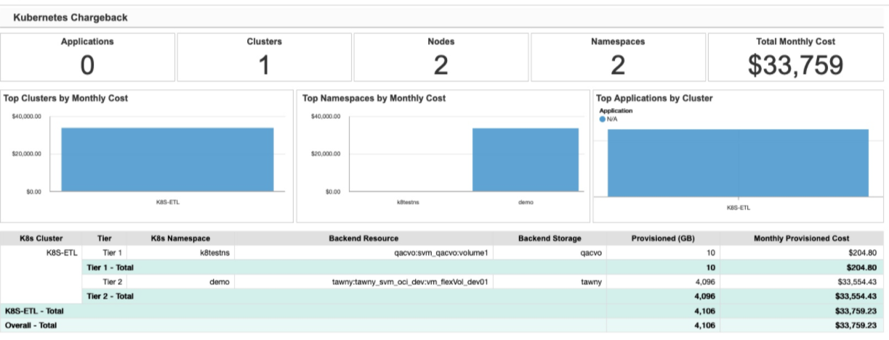
Tema oscuro ha llegado
Muchos de ustedes pidieron un tema oscuro, y Cloud Insights ha respondido. Para cambiar entre tema claro y oscuro, haga clic en el menú desplegable junto a su nombre de usuario.

Soporte para recopilador de datos
Hemos realizado algunas mejoras en los colectores de datos Cloud Insights. Estos son algunos de los aspectos más destacados:
-
Nuevo recopilador para Amazon FSX para ONTAP
Septiembre de 2021
Las políticas de rendimiento son ahora monitores
Los monitores y alertas han suplantado las políticas de rendimiento y los incumplimientos en Cloud Insights. "Alerta con monitores" ofrece mayor flexibilidad e información sobre posibles problemas o tendencias de su entorno.
Sugerencias, comodines y expresiones de Autocompletar en monitores
Al crear un monitor para las alertas, escribir un filtro es ahora predictivo, lo que le permite buscar y encontrar fácilmente las métricas o los atributos para su monitor. Además, se le dará la opción de crear un filtro comodín basado en el texto que escriba.

Agente de Telegraf actualizado
El agente para la ingestión de datos de integración de telegraf se ha actualizado a la versión 1.19.3, con mejoras de rendimiento y seguridad. Los usuarios que deseen actualizar pueden consultar la sección de actualización correspondiente de "Instalación del agente" documentación. Las versiones anteriores del agente seguirán funcionando sin que se requiera ninguna acción del usuario.
Soporte para recopilador de datos
Hemos realizado algunas mejoras en los colectores de datos Cloud Insights. Estos son algunos de los aspectos más destacados:
-
El recopilador de Microsoft Hyper-V ahora utiliza PowerShell en lugar de WMI
-
Los equipos virtuales y el recopilador VHD de Azure ahora son hasta 10 veces más rápidos gracias a las llamadas paralelas
-
HPE Nimble admite ahora configuraciones federadas e iSCSI
Y como siempre estamos mejorando la recopilación de datos, aquí hay algunos otros cambios recientes de nota:
-
Nuevo recopilador para EMC Powerstore
-
Nuevo colector para Hitachi OPS Center
-
Nuevo colector para Hitachi Content Platform
-
Recopilador ONTAP mejorado para crear informes de los pools de tejido
-
ANF mejorado con rendimiento de volúmenes y pools de almacenamiento
-
EMC ECS mejorado con nodos de almacenamiento y rendimiento del almacenamiento, así como el número de objetos en bloques
-
Isilon de EMC mejorado con métricas de nodos de almacenamiento y Qtree
-
EMC Symetrix mejorada con métricas de límite DE CALIDAD de SERVICIO de los volúmenes
-
IBM SVC y EMC PowerStore mejorados con número de serie padre de nodos de almacenamiento
Agosto de 2021
Nueva interfaz de usuario de página de auditoría
La "Página de auditoría" Proporciona una interfaz más limpia y ahora permite la exportación de eventos de auditoría a un archivo .CSV.
Gestión de funciones de usuario mejorada
Cloud Insights ahora ofrece una mayor libertad para asignar funciones de usuario y controles de acceso. Ahora se pueden asignar permisos granulares a los usuarios para realizar tareas de supervisión, generación de informes y Cloud Secure por separado.
Esto significa que puede permitir a un mayor número de usuarios el acceso administrativo a las funciones de supervisión, optimización y generación de informes mientras restringe el acceso a los datos confidenciales de auditoría y actividad de Cloud Secure únicamente a los que los necesiten.
"Obtenga más información" Acerca de los diferentes niveles de acceso en la documentación de Cloud Insights.
Junio de 2021
Sugerencias, comodines y expresiones de Autocompletar en filtros
Con este lanzamiento de Cloud Insights ya no tendrá que conocer todos los nombres y valores posibles en los que filtrar una consulta o widget. Al filtrar, simplemente puede empezar a escribir y Cloud Insights le sugerirá valores basados en el texto. Ya no tendrá que buscar por adelantado los nombres de las aplicaciones o los atributos de Kubernetes para encontrar los que desea mostrar en el widget.
A medida que escribe en un filtro, el filtro muestra una lista inteligente de resultados de los que puede elegir, así como la opción de crear un filtro * comodín* basado en el texto actual. Si selecciona esta opción, se devolverán todos los resultados que coincidan con la expresión comodín. Por supuesto, también puede seleccionar varios valores individuales que desea agregar al filtro.

Además, puede crear expresiones en un filtro utilizando NOT o OR, o puede seleccionar la opción "Ninguno" para filtrar los valores nulos en el campo.
Más información acerca de "opciones de filtrado" en consultas y widgets.
API disponibles mediante edición
Las potentes API de Cloud Insights son más accesibles que nunca, con las API de alertas ahora disponibles en las ediciones Standard y Premium. Las siguientes API están disponibles para cada edición:
| Categoría de API | Básico | Estándar | Premium |
|---|---|---|---|
Unidad de adquisición |
|
|
|
Recopilación de datos |
|
|
|
Alertas |
|
|
|
Activos |
|
|
|
Ingesta de datos |
|
|

Visibilidad del VP y Pod de Kubernetes
Cloud Insights ofrece visibilidad del almacenamiento de back-end para los entornos de Kubernetes, lo que le proporciona información sobre sus pods de Kubernetes y los volúmenes persistentes (VP). Ahora puede realizar un seguimiento de contadores de VP como IOPS, la latencia y el rendimiento desde el uso de un único Pod a través de un contador de VP a un VP y hasta el dispositivo de almacenamiento del entorno de administración.
En la página de destino volumen o volumen interno, se muestran dos nuevas tablas:


Tenga en cuenta que para aprovechar estas nuevas tablas, se recomienda desinstalar su agente de Kubernetes actual e instalarlo desde cero. También debe instalar Kube-State-Metrics versión 2.1.0 o posterior.
Enlaces del nodo de Kubernetes a la máquina virtual
En una página Kubernetes Node, ahora puede hacer clic en para abrir la página de máquina virtual del nodo. La página de la máquina virtual también incluye un enlace de vuelta al nodo en sí.
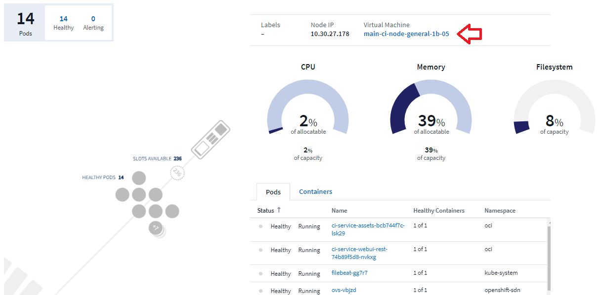

Monitores de alertas sustitución de directivas de rendimiento
Para permitir los beneficios adicionales de múltiples umbrales, entrega de alertas por correo electrónico y webhook, alerta de todas las métricas mediante una única interfaz y mucho más, Cloud Insights convertirá a los clientes de la Edición Estándar y Premium de políticas de rendimiento a Monitores durante los meses de julio y agosto de 2021. Más información acerca de "Alertas y monitores", y manténgase atento para este emocionante cambio.
Cloud Secure es compatible con NFS
Cloud Secure ahora admite la recopilación de datos NFS para ONTAP. Supervise el acceso de usuario SMB y NFS para proteger sus datos contra ataques de ransomware. Además, Cloud Secure admite directorios de usuarios LDAP y Active-Directory para la colección de atributos de usuario NFS.
Purga de snapshots de Cloud Secure
Cloud Secure elimina automáticamente las snapshots en función de la configuración de purga de snapshots, con el fin de ahorrar espacio de almacenamiento y reducir la necesidad de eliminación manual de snapshots.

Velocidad de recogida de datos de Cloud Secure
Un único sistema de agentes de recopilación de datos ahora puede publicar hasta 20,000 eventos por segundo en Cloud Secure.
Mayo de 2021
Estos son algunos de los cambios que hemos realizado en abril:
Agente de Telegraf actualizado
El agente para la ingestión de datos de integración de telegraf se ha actualizado a la versión 1.17.3, con mejoras de rendimiento y seguridad. Los usuarios que deseen actualizar pueden consultar la sección de actualización correspondiente de "Instalación del agente" documentación. Las versiones anteriores del agente seguirán funcionando sin que se requiera ninguna acción del usuario.
Agregue acciones correctivas a una alerta
Ahora puede agregar una descripción opcional así como información adicional y/o acciones correctivas al crear o modificar un monitor rellenando la sección Agregar una descripción de alerta. La descripción se enviará con la alerta. El campo inconocimientos y acciones correctivas puede proporcionar pasos detallados y directrices para tratar las alertas, y se mostrará en la sección de resumen de la página de destino de alertas.

API de Cloud Insights para todas las ediciones
El acceso a la API ya está disponible en todas las ediciones de Cloud Insights. Los usuarios de la edición básica ahora pueden automatizar acciones para unidades de adquisición y colectores de datos, y los usuarios de Standard Edition pueden consultar métricas y procesar métricas personalizadas. La edición Premium sigue permitiendo el uso completo de todas las categorías de API.
| Categoría de API | Básico | Estándar | Premium |
|---|---|---|---|
Unidad de adquisición |
|
|
|
Recopilación de datos |
|
|
|
Activos |
|
|
|
Ingesta de datos |
|
|
|
Almacén de datos |
|
Para obtener más información sobre el uso de la API, consulte "Documentación de API".
Abril de 2021
Gestión más sencilla de los monitores
"Agrupación de monitores" simplifica la gestión de monitores en su entorno. Ahora se pueden agrupar varios monitores y pausarlo como uno solo. Por ejemplo, si tiene una actualización que se produce en una pila de infraestructuras, puede pausar las alertas de todos esos dispositivos con un solo clic.
Los grupos de monitores son la primera parte de una nueva e interesante función que mejora la gestión de los dispositivos ONTAP en Cloud Insights.

Opciones mejoradas de alerta mediante Webanzuelos
Muchas aplicaciones comerciales admiten "Enlaces web" como interfaz de entrada estándar. Cloud Insights admite ahora muchos de estos canales de entrega, proporcionando plantillas predeterminadas para Slack, PagerDuty, equipos y Discord, además de proporcionar enlaces web genéricos personalizables para admitir muchas otras aplicaciones.

Identificación de dispositivos mejorada
Para mejorar la supervisión y la resolución de problemas, así como para proporcionar informes precisos, es útil entender los nombres de los dispositivos en lugar de sus direcciones IP u otros identificadores. Cloud Insights incorpora ahora una forma automática de identificar los nombres de los dispositivos de host físicos y de almacenamiento en el entorno mediante un enfoque basado en reglas llamado "Resolución del dispositivo", Disponible en el menú Administrar.
¡Pidió más!
Una popular pregunta de los clientes ha sido por más opciones predeterminadas para visualizar la gama de datos, por lo que hemos añadido las siguientes cinco nuevas opciones que ya están disponibles a través del servicio a través del selector de rango de tiempo:
-
Últimos 30 minutos
-
Últimas 2 horas
-
Últimas 6 horas
-
Últimas 12 horas
-
Últimos 2 días
Varias suscripciones en un entorno Cloud Insights
A partir del 2 de abril, Cloud Insights admite varias suscripciones del mismo tipo de edición para un cliente en una única instancia de Cloud Insights. Esto permite a los clientes cubrir partes de su suscripción a Cloud Insights mediante compras de infraestructura. Póngase en contacto con el departamento de ventas de NetApp para obtener ayuda con varias suscripciones.
Elija su ruta
Al configurar Cloud Insights, ahora puede elegir si empezar con la monitorización y alertas o la detección de amenazas de Ransomware e insider. Cloud Insights configurará su entorno de inicio en función de la ruta que elija. Puede configurar la otra ruta en cualquier momento después.
Incorporación más sencilla de Cloud Secure
Además, nunca fue tan fácil empezar a utilizar Cloud Secure con una nueva lista de comprobación para configurar paso a paso.

Como siempre, nos encanta escuchar sus sugerencias! Envíelos a ng-cloudinsights-customerfeedback@netapp.com.
Febrero de 2021
Agente de Telegraf actualizado
El agente para la ingestión de datos de integración de telegraf se ha actualizado a la versión 1.17.0, que incluye correcciones de vulnerabilidad y errores.
Analizador de costes de cloud
Experimente la potencia de Spot por NetApp con Cloud Cost, que ofrece una descripción detallada "análisis de costes" de la inversión pasada, presente y estimada, lo que le proporciona visibilidad del uso de la nube en su entorno. La consola de costes del cloud proporciona una visión clara de los gastos del cloud y un análisis detallado de las cargas de trabajo, cuentas y servicios individuales.
El coste del cloud puede ayudar con estos importantes retos:
-
Realizar el seguimiento y la supervisión de sus gastos en cloud
-
Identificación de residuos y áreas de optimización potenciales
-
Entrega de elementos de acción ejecutables
El coste del cloud se centra en la supervisión. Actualícese a la cuenta de NetApp para permitir el ahorro automático de costes y la optimización del entorno.
Consulta de objetos con valores nulos mediante filtros
Cloud Insights ahora permite buscar atributos y métricas con valores nulos/ninguno mediante el uso de filtros. Puede realizar este filtrado en cualquier atributo o métrica en las siguientes ubicaciones:
-
En la página Consulta
-
En widgets de panel y variables de página
-
En la página de lista Alerts
-
Al crear monitores
Para filtrar valores nulos/ninguno, solo tiene que seleccionar la opción None cuando aparezca en el menú desplegable de filtro adecuado.
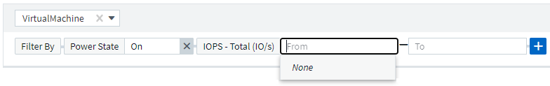
Soporte para varias regiones
A partir de hoy, ofrecemos el servicio Cloud Insights en diferentes regiones de todo el mundo, lo que facilita el rendimiento y aumenta la seguridad de los clientes con sede fuera de Estados Unidos. Cloud Insights/Cloud Secure almacena información de acuerdo con la región en la que se crea su entorno.
Haga clic en "aquí" si quiere más información.
Enero de 2021
Otras métricas de ONTAP cuyo nombre se ha cambiado
Como parte de nuestro continuo esfuerzo por mejorar la eficiencia en la recopilación de datos desde sistemas ONTAP, se ha cambiado el nombre de las siguientes métricas de ONTAP.
Si tiene widgets o consultas de panel existentes utilizando cualquiera de estas métricas, deberá editarlas o volver a crearlas para utilizar los nuevos nombres de métricas.
| Nombre de métrica anterior | Nuevo nombre de métrica |
|---|---|
netapp_ontap.disk_constituyente.total_transfers |
netapp_ontap.disk_constituyente.total_iops |
netapp_ontap.disk.total_transfers |
netapp_ontap.disk.total_iops |
netapp_ontap.fcp_lif.read_data |
netapp_ontap.fcp_lif.read_throughput |
netapp_ontap.fcp_lif.write_data |
netapp_ontap.fcp_lif.write_throughput |
netapp_ontap.iscsi_lif.read_data |
netapp_ontap.iscsi_lif.read_throughput |
netapp_ontap.iscsi_lif.write_data |
netapp_ontap.iscsi_lif.write_throughput |
netapp_ontap.lif.recv_data |
netapp_ontap.lif.recv_throughput |
netapp_ontap.lif.sent_data |
netapp_ontap.lif.sent_throughput |
netapp_ontap.lun.read_data |
netapp_ontap.lun.read_rendimiento |
netapp_ontap.lun.write_data |
netapp_ontap.lun.write_throughput |
netapp_ontap.nic_common.rx_bytes |
netapp_ontap.nic_common.rx_throughput |
netapp_ontap.nic_common.tx_bytes |
netapp_ontap.nic_common.tx_rendimiento |
netapp_ontap.path.read_data |
netapp_ontap.path.read_throughput |
netapp_ontap.path.write_data |
netapp_ontap.path.write_throughput |
netapp_ontap.path.total_data |
netapp_ontap.path.total_rendimiento |
netapp_ontap.policy_group.read_data |
netapp_ontap.policy_group.read_rendimiento |
netapp_ontap.policy_group.write_data |
netapp_ontap.policy_group.write_throughput |
netapp_ontap.policy_group.other_data |
netapp_ontap.policy_group.other_rendimiento |
netapp_ontap.policy_group.total_data |
netapp_ontap.policy_group.total_rendimiento |
netapp_ontap.system_node.disk_data_read |
netapp_ontap.system_node.disk_throughput_read |
netapp_ontap.system_node.disk_data_written |
netapp_ontap.system_node.disk_throughput_written |
netapp_ontap.system_node.hdd_data_read |
netapp_ontap.system_node.hdd_throughput_read |
netapp_ontap.system_node.hdd_data_written |
netapp_ontap.system_node.hdd_throughput_written |
netapp_ontap.system_node.ssd_data_read |
netapp_ontap.system_node.ssd_rendimiento_lectura |
netapp_ontap.system_node.ssd_data_written |
netapp_ontap.system_node.ssd_throughput_written |
netapp_ontap.system_node.net_data_recv |
netapp_ontap.system_node.net_throughput_recv |
netapp_ontap.system_node.net_data_sent |
netapp_ontap.system_node.net_throughput_sent |
netapp_ontap.system_node.fcp_data_recv |
netapp_ontap.system_node.fcp_throughput_recv |
netapp_ontap.system_node.fcp_data_sent |
netapp_ontap.system_node.fcp_throughput_sent |
netapp_ontap.volume_node.cifs_read_data |
netapp_ontap.volume_node.cifs_read_rendimiento |
netapp_ontap.volume_node.cifs_write_data |
netapp_ontap.volume_node.cifs_write_throughput |
netapp_ontap.volume_node.nfs_read_data |
netapp_ontap.volume_node.nfs_read_rendimiento |
netapp_ontap.volume_node.nfs_write_data |
netapp_ontap.volume_node.nfs_write_throughput |
netapp_ontap.volume_node.iscsi_read_data |
netapp_ontap.volume_node.iscsi_read_rendimiento |
netapp_ontap.volume_node.iscsi_write_data |
netapp_ontap.volume_node.iscsi_write_throughput |
netapp_ontap.volume_node.fcp_read_data |
netapp_ontap.volume_node.fcp_read_rendimiento |
netapp_ontap.volume_node.fcp_write_data |
netapp_ontap.volume_node.fcp_write_throughput |
netapp_ontap.volume.read_data |
netapp_ontap.volume.read_rendimiento |
netapp_ontap.volume.write_data |
netapp_ontap.volume.write_rendimiento |
netapp_ontap.workload.read_data |
netapp_ontap.workload.read_rendimiento |
netapp_ontap.workload.write_data |
netapp_ontap.workload.write_throughput |
netapp_ontap.workload_volume.read_data |
netapp_ontap.workload_volume.read_rendimiento |
netapp_ontap.workload_volume.write_data |
netapp_ontap.workload_volume.write_throughput |
Nuevo Kubernetes Explorer
La "Explorador de Kubernetes" Proporciona una vista de topología sencilla de los clústeres de Kubernetes, que permite incluso a los no expertos identificar rápidamente problemas y dependencias, desde el nivel del clúster hasta el contenedor y el almacenamiento.
Puede explorar una amplia variedad de información usando los detalles detallados del explorador de Kubernetes para conocer el estado, el uso y el estado de los clústeres, nodos, pods, contenedores y el almacenamiento en su entorno de Kubernetes.

Diciembre de 2020
Instalación de Kubernetes más sencilla
La instalación de Kubernetes Agent se ha simplificado para requerir menos interacciones con el usuario. "Instalación del agente Kubernetes" Ahora incluye recogida de datos de Kubernetes.
Noviembre de 2020
Paneles adicionales
Se han añadido a la galería las siguientes nuevas consolas centradas en ONTAP y están disponibles para su importación:
-
ONTAP: Rendimiento y capacidad de agregados
-
FAS/AFF de ONTAP: Aprovechamiento de la capacidad
-
FAS/AFF de ONTAP: Capacidad del clúster
-
FAS/AFF de ONTAP: Eficiencia
-
FAS/AFF de ONTAP: Rendimiento de FlexVol
-
FAS/AFF de ONTAP - puntos operativos y óptimos de los nodos
-
FAS/AFF de ONTAP: Prepublicar las eficiencias en la capacidad
-
ONTAP: Actividad de puerto de red
-
ONTAP: Protocolos de nodo rendimiento
-
ONTAP: Rendimiento de carga de trabajo de nodos (front-end)
-
ONTAP: Procesador
-
ONTAP: Rendimiento de cargas de trabajo de SVM (front-end)
-
ONTAP: Rendimiento de carga de trabajo de volúmenes (front-end)
Cambiar nombre de columna en widgets de tabla
Puede cambiar el nombre de las columnas en la sección Metrics and Attributes de un widget de tabla abriendo el widget en el modo Editar y haciendo clic en el menú situado en la parte superior de la columna. Introduzca el nuevo nombre y haga clic en Save, o bien haga clic en Reset para restablecer el nombre original de la columna.
Tenga en cuenta que esto sólo afecta al nombre para mostrar de la columna en el widget de tabla; el nombre de métrica/atributo no cambia en los propios datos subyacentes.

Octubre de 2020
Expansión predeterminada de datos de integración
La agrupación de widgets de tabla ahora permite expansiones predeterminadas de las métricas Kubernetes, datos avanzados de ONTAP y nodo de agente. Por ejemplo, si agrupa Kubernetes Nodes por Cluster, verá una fila en la tabla de cada clúster. A continuación, podría expandir cada fila de clúster para ver una lista de los objetos Node.
Asistencia técnica de Basic Edition
La asistencia técnica está ahora disponible para los suscriptores de la edición básica de Cloud Insights además de las ediciones Standard y Premium. Además, Cloud Insights ha simplificado el flujo de trabajo para crear una incidencia de soporte de NetApp.
API pública de Cloud Secure
Compatibilidad con Cloud Secure "API de REST" Para acceder a la información de actividad y alertas. Esto se logra mediante el uso de tokens de acceso API, creados a través de la interfaz de usuario del administrador de Cloud Secure, que luego se utilizan para acceder a las API DE REST. La documentación de Swagger para estas API DE REST está integrada con Cloud Secure.
Septiembre de 2020
Página de consulta con datos de integración
La página de consulta Cloud Insights admite datos de integración (es decir, de Kubernetes, métricas avanzadas de ONTAP, etc.). Al trabajar con datos de integración, la tabla de resultados de la consulta muestra una vista "pantalla dividida", con objeto/agrupación en el lado izquierdo y datos de objeto (atributos/métricas) a la derecha. También puede elegir varios atributos para agrupar datos de integración.

Formato de visualización de unidades en widget de tabla
El formato de visualización de unidades está ahora disponible en los widgets de tabla para las columnas que muestran datos de métricas/contadores (por ejemplo, gigabytes, MB/segundo, etc.). Para cambiar la unidad de visualización de una métrica, haga clic en el menú "tres puntos" del encabezado de la columna y seleccione "visualización de unidades". Puede elegir entre cualquiera de las unidades disponibles. Las unidades disponibles variarán según el tipo de datos de métrica de la columna de visualización.

Página de detalles de la unidad de adquisición
Las unidades de adquisición ahora tienen su propia página de destino, proporcionando detalles útiles para cada AU así como información para ayudar en la solución de problemas. La "PÁGINA de detalles DE AU" Proporciona vínculos a los recopiladores de datos de la UA así como información útil sobre el estado.
Se quitó la dependencia de Docker de Cloud Secure
Se ha eliminado la dependencia de Cloud Secure de Docker. Ya no se requiere Docker para la instalación de agentes de Cloud Secure.
Funciones de usuario de informes
Si tiene Cloud Insights Premium Edition con informes, todos los usuarios de Cloud Insights de su entorno también tienen un inicio de sesión único (SSO) en la aplicación de informes (es decir, Cognos); al hacer clic en el enlace Informes del menú, se conectarán automáticamente a Informes.
Su rol de usuario en Cloud Insights determina su "Función de usuario de informes":
Cloud Insights |
Función de creación de informes |
Permisos de informes |
Invitado |
Consumidor |
Puede ver, programar y ejecutar informes y establecer preferencias personales como las de idiomas y zonas horarias. Los consumidores no pueden crear informes ni realizar tareas administrativas. |
Usuario |
Autor |
Puede realizar todas las funciones de usuario, así como crear y gestionar informes y paneles. |
Administrador |
Administrador |
Puede realizar todas las funciones de Autor, así como todas las tareas administrativas como la configuración de informes y el cierre y reinicio de tareas de creación de informes. |
|
|
Los informes de Cloud Insights están disponibles para entornos de 500 UM o más. |

|
Si es un cliente actual de Premium Edition y desea conservar sus informes, lea esto "nota importante para los clientes existentes". |
Nueva categoría de API para el uso de datos
Cloud Insights ha añadido una categoría de API de ingesta de datos, lo que le proporciona un mayor control sobre los datos y agentes personalizados. Puede encontrar documentación detallada para esta y otras categorías de API en Cloud Insights navegando a Administración > acceso a API y haciendo clic en el enlace API Documentation. También puede adjuntar un comentario al AU en el campo Nota, que se muestra en la página de detalles de AU así como en la página de lista de AU.
Agosto de 2020
Monitorización y alertas
Además de la capacidad actual de establecer políticas de rendimiento para objetos de almacenamiento, máquinas virtuales, EC2 y puertos, la edición estándar de Cloud Insights ahora incluye la capacidad a. "configurar monitores" Para umbrales sobre datos de integración para Kubernetes, métricas avanzadas de ONTAP y complementos Telegraf. Sólo tiene que crear un monitor para cada métrica de objeto que desee activar alertas, establecer las condiciones para umbrales de nivel de advertencia o crítico y especificar los destinatarios de correo electrónico deseados para cada nivel. Entonces puede "ver y gestionar alertas" para realizar un seguimiento de tendencias o solucionar problemas.

Julio de 2020
Cloud Secure Tome una instantánea Acción
Cloud Secure protege los datos realizando automáticamente una instantánea cuando se detecta una actividad maliciosa y garantizando así un backup de los datos seguro.
Puede definir políticas de respuesta automatizadas que tomen una copia Snapshot cuando se detecte un ataque de ransomware u otra actividad anómala del usuario. También puede realizar una copia de Snapshot manualmente desde la página de alertas.
Instantánea automática tomada:
Copia Snapshot manual:
Actualizaciones de métricas/contadores
Los siguientes contadores de capacidad están disponibles para usar en la interfaz de usuario de Cloud Insights y la API DE REST. Anteriormente, estos contadores solo estaban disponibles para el almacén de datos / Informes.
| Tipo de objeto | Contador |
|---|---|
Reducida |
Capacidad: Capacidad bruta de repuesto: Sin formato error |
Pool de almacenamiento |
Capacidad de datos - capacidad de datos utilizada - capacidad total de otros - capacidad utilizada - capacidad total - capacidad bruta - límite de capacidad suave |
Volumen interno |
Capacidad de datos - capacidad de datos utilizada - total de otras capacidades - capacidad utilizada - total de clones ahorrados - total |
Detección de posibles ataques de Cloud Secure
Cloud Secure detecta ahora ataques potenciales como el ransomware. Haga clic en una alerta en la página de lista Alertas para abrir una página de detalles que muestre lo siguiente:
-
Hora del ataque
-
Actividad de archivo y usuario asociados
-
Medidas adoptadas
-
Información adicional para ayudar a realizar el seguimiento de posibles infracciones de seguridad
Página de alertas que muestra el ataque potencial de ransomware: 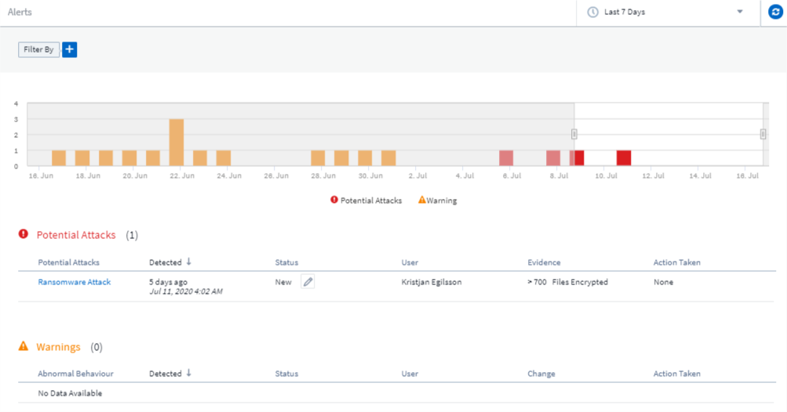
Página detallada para el ataque potencial de ransomware:
Suscríbase a Premium Edition a través de AWS
Durante la prueba de Cloud Insights, puede "suscripción automática" A través de AWS Marketplace para versiones estándar de Cloud Insights o Premium Edition. Antes, solo podía suscribirse automáticamente a través de AWS Marketplace a Standard Edition únicamente.
Widget de tabla mejorado
El widget Dashboard/página de tabla de activos incluye las siguientes mejoras:
-
Vista "pantalla dividida": Los widgets de tabla muestran el objeto/agrupación a la izquierda y los datos del objeto (atributos/métricas) a la derecha.

-
Agrupación de varios atributos: En datos de integración (Kubernetes, métricas avanzadas de ONTAP, Docker, etc.), puede elegir varios atributos para la agrupación. Los datos se muestran de acuerdo con los atributos de agrupación que elija.
Agrupación con datos de integración (se muestra en el modo Editar):
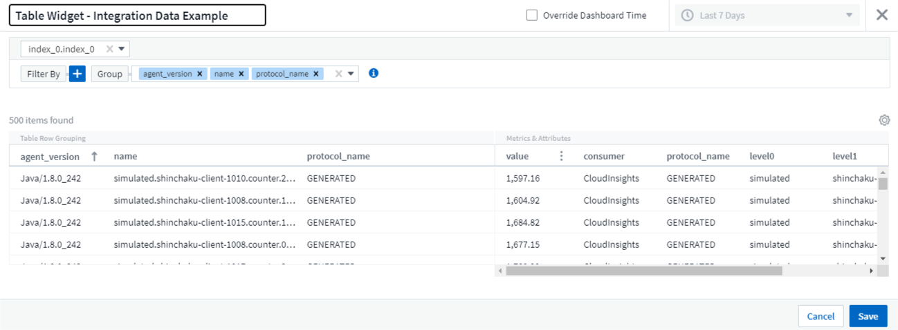
-
La agrupación de datos de la infraestructura (almacenamiento, EC2, máquinas virtuales, puertos, etc.) tiene un único atributo como antes. Al agrupar por un atributo que no es el objeto, la tabla le permitirá expandir la fila de grupo para ver todos los objetos del grupo.
Agrupación con datos de infraestructura (se muestra en el modo de visualización):

Filtrado de métricas
Además de filtrar los atributos de un objeto en un widget, ahora también puede filtrar las métricas.
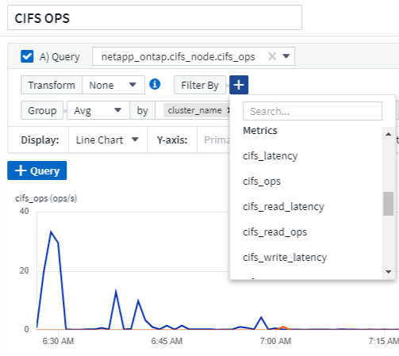
Al trabajar con datos de integración (Kubernetes, datos avanzados de ONTAP, etc.), el filtrado de métricas elimina los puntos de datos individuales/incomparables de la serie de datos gráficamente, a diferencia de los datos de infraestructura (almacenamiento, VM, puertos, etc.), donde los filtros funcionan en el valor agregado de la serie de datos y pueden eliminar potencialmente todo el objeto del gráfico.

Datos de contador avanzados de ONTAP
Cloud Insights aprovecha los datos de contador avanzados * específicos para ONTAP de NetApp, que ofrecen una gran cantidad de contadores y mediciones recopilados desde dispositivos ONTAP. Todos los clientes de ONTAP de NetApp tienen a su disposición los datos de contador avanzados de ONTAP. Estas métricas permiten una visualización personalizada y de amplio alcance en los widgets y paneles de control de Cloud Insights.
Puede encontrar contadores avanzados de ONTAP buscando "netapp_ontap" en la consulta del widget y seleccionando entre ellos.

Para refinar la búsqueda, escriba partes adicionales del nombre del contador. Por ejemplo:
-
lif
-
aggregate
-
offbox_vscan_server
-
y sigue


Tenga en cuenta lo siguiente:
-
La recopilación de datos avanzada se habilitará de forma predeterminada para los nuevos recopiladores de datos de ONTAP. Para activar la recopilación de datos avanzados para los recopiladores de datos de ONTAP existentes, edite el recopilador de datos y expanda la sección Configuración avanzada.
-
La recopilación avanzada de datos no está disponible para ONTAP de 7-Mode.
Paneles de contador avanzados
Cloud Insights incluye varios paneles diseñados previamente para ayudarle a comenzar a visualizar contadores avanzados de ONTAP para temas como rendimiento agregado, volumen de trabajo, actividad del procesador, etc. Si tiene configurado al menos un recopilador de datos de ONTAP, estos se pueden importar desde la Galería de consolas de cualquier página de lista de paneles.
Leer más
Puede encontrar más información sobre los datos avanzados de ONTAP en los siguientes enlaces:
-
https://mysupport.netapp.com/site/tools/tool-eula/netapp-harvest (Nota: Tendrá que iniciar sesión en el soporte de NetApp).
Menú políticas e infracciones
Las políticas de rendimiento y las infracciones se encuentran ahora en el menú Alertas. La política y la funcionalidad de infracción no han cambiado.

Agente de Telegraf actualizado
El agente para la ingestión de datos de integración de telegraf se ha actualizado a. "versión 1.14", que incluye correcciones de errores, correcciones de seguridad y nuevos complementos.
Nota: Al configurar un recopilador de datos de Kubernetes en la plataforma Kubernetes, puede que aparezca un error "HTTP status 403 Prohibido" en el registro debido a que los permisos son insuficientes en el atributo "clusterrole".
Para evitar este problema, agregue las siguientes líneas resaltadas a la sección rules: del rol de clúster de acceso a endpoints y, a continuación, reinicie los pods de Telegraf.
rules: - apiGroups: - "" - apps - autoscaling - batch - extensions - policy - rbac.authorization.k8s.io attributeRestrictions: null resources: - nodes/metrics - nodes/proxy <== Add this line - nodes/stats - pods <== Add this line verbs: - get - list <== Add this line
Junio de 2020
Informes simplificados de errores de recopiladores de datos
Informar de un error de recopilador de datos es más fácil con el botón Send error Report de la página del recopilador de datos. Al hacer clic en el botón, se envía a NetApp información básica sobre el error y se solicita la investigación del problema. Una vez pulsado, Cloud Insights confirma que se ha notificado a NetApp y se deshabilita el botón de informe de errores para indicar que se ha enviado un informe de errores para dicho recopilador de datos. El botón permanece deshabilitado hasta que se actualiza la página del explorador.

Mejoras en los widgets
Se han realizado las siguientes mejoras en los widgets del panel. Estas mejoras se consideran la funcionalidad de vista previa y es posible que no estén disponibles para todos los entornos Cloud Insights.
-
Nuevo selector de objeto/métrica: Los objetos (almacenamiento, disco, puertos, nodos, etc.) y sus métricas asociadas (IOPS, latencia, recuento de CPU, etc.) están ahora disponibles en widgets en un único menú desplegable incluido con una potente funcionalidad de búsqueda. Puede introducir varios términos parciales en la lista desplegable. Cloud Insights incluirá todas las métricas de objeto que cumplan dichos términos.

-
Agrupación de varias etiquetas: Cuando trabaja con datos de integración (Kubernetes, etc.), puede agrupar los datos por varias etiquetas/atributos. Por ejemplo, Sum Memory usada por el espacio de nombres de Kubernetes y el nombre de contenedor.

Mayo de 2020
Funciones de usuario de informes
Se añadieron los siguientes roles para Reporting:
-
Clientes de Cloud Insights: Puede ejecutar y ver informes
-
Autores de Cloud Insights: Puede realizar las funciones de consumidor, así como crear y gestionar informes y paneles
-
Administradores de Cloud Insights: Pueden realizar las funciones de Autor así como todas las tareas administrativas
Actualizaciones de Cloud Secure
Cloud Insights incluye los siguientes cambios recientes en Cloud Secure.
En la página Forensics > Activity Forensics, proporcionamos dos vistas para analizar e investigar la actividad del usuario:
-
Vista de actividad, centrada en la actividad del usuario (¿Qué operación? ¿Dónde se realiza?)
-
Vista entidades, centrada en los archivos a los que el usuario accedió.

Además, la notificación por correo electrónico de Alerta ahora contiene un enlace directo a la página de alertas.
Agrupación de tablero de a bordo
La agrupación de paneles permite un mejor trabajo "gestión de paneles" que son relevantes para usted. Puede añadir paneles relacionados a un grupo para la gestión "única" de, por ejemplo, su almacenamiento o máquinas virtuales.
Los grupos se personalizan por usuario, por lo que los grupos de una persona pueden ser diferentes de los de otra. Puede tener tantos grupos como necesite, con tan pocos o tantos paneles en cada grupo como desee.

Fijación del salpicadero
Puede anclar paneles para que los favoritos siempre aparezcan en la parte superior de la lista.
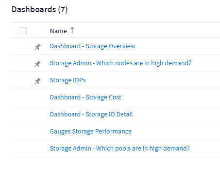
Modo TV y auto-refrescamiento
"Modo TV y auto-refrescamiento" permitir una visualización casi en tiempo real de los datos en un panel o página de activos:
-
Modo TV proporciona una pantalla desembragada; el menú de navegación está oculto, proporcionando más propiedades de pantalla para la visualización de datos.
-
Datos de widgets en paneles y páginas de inicio de activos actualización automática según un intervalo de actualización (tan solo cada 10 segundos) determinado por el intervalo de tiempo del panel seleccionado (o intervalo de tiempo del widget, si está configurado para anular el tiempo del panel).
Combinado, el modo TV y la actualización automática proporcionan una vista en directo de los datos de Cloud Insights, perfecta para demostraciones sin problemas o supervisión interna.
Abril de 2020
Nuevas opciones de intervalo de tiempo del panel
Ahora, las opciones de intervalo de tiempo para los paneles y otras páginas Cloud Insights incluyen Last 1 Hora y Last 15 minutos.
Actualizaciones de Cloud Secure
Cloud Insights incluye los siguientes cambios recientes en Cloud Secure.
-
El mejor reconocimiento de los metadatos de archivos y carpetas cambia para detectar si el usuario ha cambiado el permiso, el propietario o la propiedad del grupo.
-
Exportar informe de actividades de usuario a CSV.
Cloud Secure supervisa y audita todas las operaciones de acceso de los usuarios en archivos y carpetas. La auditoría de actividades le permite cumplir las políticas de seguridad internas, cumplir los requisitos de cumplimiento de normativas externos, como PCI, GDPR e HIPAA, y realizar investigaciones de incidentes de seguridad e infracciones de datos.
Hora predeterminada de la consola
El intervalo de tiempo predeterminado para los paneles es ahora de 3 horas en lugar de 24 horas.
Tiempos de agregación optimizados
Optimizado "agregación de tiempo" Los intervalos en los widgets de series temporales (gráficos de líneas, líneas, líneas, áreas y áreas apiladas) son más frecuentes para intervalos de tiempo de panel/widget de 3 y 24 horas, lo que permite crear un gráfico más rápido de los datos.
-
el intervalo de tiempo de 3 horas se optimiza a un intervalo de agregación de 1 minuto. Anteriormente eran 5 minutos.
-
el intervalo de tiempo de 24 horas se optimiza a un intervalo de agregación de 30 minutos. Antes era 1 hora.
Aún puede reemplazar la agregación optimizada estableciendo un intervalo personalizado.
Formato automático de la unidad de visualización
En la mayoría de los widgets, Cloud Insights conoce la unidad base en la que se muestran los valores, por ejemplo megabytes, miles, Porcentaje, milisegundos (ms), etc., y ahora "formatea automáticamente" el widget de la unidad más legible. Por ejemplo, un valor de datos de 1,234,567,890 bytes se formatearía automáticamente a 1.23 gibibytes. En muchos casos, Cloud Insights conoce el mejor formato para los datos que se van a adquirir. En los casos en los que no se conoce el mejor formato o en los widgets en los que desea anular el formato automático, puede elegir el formato que desee.

Importar anotaciones mediante API
Con la potente API de Cloud Insights Premium Edition, ya puede hacerlo "importar anotaciones" Y asígnelos a objetos mediante un archivo .CSV. También puede importar aplicaciones y asignar entidades de negocio de la misma manera.

Selector de widgets más sencillo
La adición de widgets a los paneles de control y a las páginas de destino de activos es más sencilla gracias a un nuevo selector de widgets que muestra todos los tipos de widgets en una única vista, por lo que el usuario ya no tiene que desplazarse por una lista de tipos de widgets para buscar el que desea añadir. Los widgets relacionados están coordinados por colores y se agrupan por proximidad en el nuevo selector.

Febrero de 2020
API con Premium Edition
La edición Premium de Cloud Insights incluye una "API potente" Que se puede utilizar para integrar Cloud Insights con otras aplicaciones, como CMDB u otros sistemas de emisión de boletos.
La información detallada basada en Swagger se encuentra en Admin > API access, en el enlace Documentación de API. Swagger proporciona una breve descripción e información de uso de la API, y permite probar cada API fuera de su entorno.
La API de Cloud Insights usa tokens de acceso para proporcionar acceso basado en permisos a categorías de API, como ACTIVOS o RECOPILACIÓN.

Sondeo inicial después de agregar un recopilador de datos
Anteriormente, después de configurar un nuevo recopilador de datos, Cloud Insights sondearía inmediatamente al recopilador de datos para recopilar datos Inventory, pero esperaría hasta que el intervalo de sondeo de rendimiento configurado (normalmente 15 minutos) recopile datos iniciales del Performance. A continuación, esperaría otro intervalo antes de iniciar la segunda encuesta de rendimiento, lo que significaba que tomaría hasta 30 minutos antes de que se adquirieran datos significativos de un nuevo recopilador de datos.
Recopilador de datos "sondeo" se ha mejorado en gran medida, de forma que el sondeo de rendimiento inicial se realiza inmediatamente después de la encuesta de inventario, con el segundo sondeo de rendimiento en pocos segundos después de la finalización de la primera encuesta de rendimiento. Esto permite a Cloud Insights empezar a mostrar datos útiles en paneles y gráficos en muy poco tiempo.
Este comportamiento de sondeo también se produce después de editar la configuración de un recopilador de datos existente.
Duplicación más sencilla de widgets
Nunca fue tan fácil crear una copia de un widget en un panel o página de destino. En el modo de edición del panel, haga clic en el menú del widget y seleccione Duplicar. Se inicia el editor de widgets, con la configuración del widget original y con un sufijo de “copia” en el nombre del widget. Puede realizar fácilmente los cambios necesarios y guardar el nuevo widget. El widget se colocará en la parte inferior de la consola y, si es necesario, puede colocarlo. Recuerde guardar el panel cuando haya finalizado todos los cambios.

Inicio de sesión único (SSO)
Con la edición Premium de Cloud Insights, los administradores pueden habilitar "Inicio de sesión único" (SSO) acceso a Cloud Insights para todos los usuarios en su dominio corporativo, sin tener que invitarlos individualmente. Con SSO activado, cualquier usuario con la misma dirección de correo electrónico del dominio puede iniciar sesión en Cloud Insights utilizando sus credenciales corporativas.
|
|
El inicio de sesión único solo está disponible en Cloud Insights Premium Edition y debe configurarse para que se pueda habilitar para Cloud Insights. La configuración de SSO incluye "Federación de identidades" Mediante Cloud Central de NetApp. La Federación permite a los usuarios de inicio de sesión único acceder a sus cuentas de Cloud Central de NetApp utilizando las credenciales de su directorio corporativo. |
Enero de 2020
Documentación de Swagger para API de REST
Swagger explica cada API DE REST disponible en Cloud Insights, además de su uso y sintaxis. Hay información disponible sobre las API de Cloud Insights en "documentación".
Barra de progreso Tutoriales en las funciones
La lista de verificación tutoriales de funciones se ha movido al banner superior y ahora incluye un indicador de progreso. Los tutoriales están disponibles para cada usuario hasta que se han despedido y siempre están disponibles en Cloud Insights "documentación".

Cambios en la unidad de adquisición
Al instalar una unidad de adquisición (AU) en un host o una máquina virtual que tenga el mismo nombre que una unidad AU ya instalada, Cloud Insights asegura un nombre único al anexar el nombre AU con "_1", "_2", etc. Este es también el caso al desinstalar y reinstalar un AU de la misma máquina virtual sin eliminarlo primero de Cloud Insights. ¿Quiere un nombre AU diferente en conjunto? No hay ningún problema; se puede cambiar el nombre de AU después de la instalación.
Agregación de tiempo optimizada en widgets
En los widgets, puede elegir entre un intervalo de agregación de tiempo Optimized o un intervalo Custom definido. La agregación optimizada selecciona automáticamente el intervalo de tiempo adecuado según el intervalo de tiempo del panel seleccionado (o el intervalo de tiempo del widget, si se anula la hora del panel de control). El intervalo cambia de forma dinámica a medida que se cambia el intervalo de tiempo del panel o widget.
Proceso de introducción simplificada a Cloud Insights
El proceso de introducción a Cloud Insights se ha simplificado para que su primera configuración sea más sencilla y fluida. Sólo tiene que seleccionar un colector de datos inicial y seguir las instrucciones. Cloud Insights le guiará a través de la configuración del recopilador de datos y de cualquier agente o unidad de adquisición que sea necesario. En la mayoría de los casos, incluso importará uno o más paneles iniciales para que pueda empezar a comprender mejor su entorno rápidamente (pero espere hasta 30 minutos para que Cloud Insights recopile datos importantes).
Mejoras adicionales:
-
La instalación de la unidad de adquisición es más sencilla y se ejecuta más rápidamente.
-
Las opciones de colectores de datos alfabéticos facilitan la búsqueda de los que están buscando.
-
Las instrucciones de configuración del recopilador de datos mejoradas son más fáciles de seguir.
-
Los usuarios con experiencia pueden omitir el proceso de introducción con solo hacer clic en un botón.
-
Una nueva barra de progreso le muestra dónde se encuentra en el proceso.

Diciembre de 2019
La entidad de negocio se puede utilizar en filtros
Las anotaciones de entidad de negocio se pueden utilizar en filtros para consultas, widgets, políticas de rendimiento y páginas de destino.
Exploración disponible para widgets de un solo valor y de calibre, y para cualquier widget que se despliegue en "todo"
Al hacer clic en el valor de un widget de un único valor o indicador, se abre una página de consulta en la que se muestran los resultados de la primera consulta utilizada en el widget. Además, al hacer clic en la leyenda de cualquier widget cuyos datos se han acumulado mediante "todo", también se abrirá una página de consulta en la que se mostrarán los resultados de la primera consulta utilizada en el widget.
Periodo de prueba ampliado
Los nuevos usuarios que se inscriban para una prueba gratuita de Cloud Insights ahora tienen 30 días para evaluar el producto. Este es un aumento respecto al período de prueba de 14 días anterior.
Cálculo de unidad administrada
El cálculo de las unidades administradas (UM) en Cloud Insights se ha cambiado a lo siguiente:
-
1 unidad gestionada = 2 hosts (cualquier máquina virtual o física)
-
1 Unidad administrada = 4 TB de capacidad sin formato de discos físicos o virtuales
Este cambio duplica de forma efectiva la capacidad del entorno que puede supervisar con su suscripción a Cloud Insights existente.
Noviembre de 2019
Ediciones Tabla de comparación de funciones
La página Admin > Subscription "tabla de comparación" Se ha actualizado para enumerar los conjuntos de funciones disponibles en las ediciones Basic, Standard y Premium de Cloud Insights. NetApp mejora constantemente sus servicios cloud, por lo que consulte esta página a menudo para encontrar la edición adecuada para las necesidades cambiantes de su negocio.
Octubre de 2019
Creación de informes
"Informes de Cloud Insights" es una herramienta de inteligencia empresarial que permite ver informes predefinidos o crear informes personalizados. Con Reporting, puede realizar las siguientes tareas:
-
Ejecute un informe predefinido
-
Cree un informe personalizado
-
Personalice el formato del informe y el método de entrega
-
Programar informes para que se ejecuten automáticamente
-
Informes por correo electrónico
-
Utilice colores para representar umbrales de datos
Los informes de Cloud Insights pueden generar informes personalizados para áreas como pago por uso, análisis de consumo y pronósticos, y pueden ayudar a responder preguntas como las siguientes:
-
¿Qué inventario tengo?
-
¿Dónde está mi inventario?
-
¿Quién utiliza nuestros activos?
-
¿Cuál es el pago por uso para el almacenamiento asignado a una unidad de negocio?
-
¿Cuánto tiempo hasta que necesite adquirir capacidad de almacenamiento adicional?
-
¿Las unidades de negocio están alineadas en los niveles de almacenamiento adecuados?
-
¿Cómo cambia la asignación de almacenamiento a lo largo de un mes, trimestre o año?
La generación de informes está disponible con Cloud Insights Premium Edition.
Mejoras de Active IQ
"Riesgos de Active IQ" ahora están disponibles como objetos que se pueden consultar y que se pueden utilizar en los widgets de tabla del panel de control. Se incluyen los siguientes atributos de objeto riesgos: * Categoría * Categoría de mitigación * impacto potencial * Detalle de riesgo * gravedad * Fuente * almacenamiento * nodo de almacenamiento * Categoría de IU
Septiembre de 2019
Nuevos widgets de trocha
Hay dos nuevos widgets disponibles para mostrar datos de un solo valor en los paneles en colores llamativos basados en los umbrales que especifique. Puede visualizar valores utilizando un * indicador sólido* o un * indicador tubular*. Los valores que se encuentran dentro del intervalo de advertencias se muestran en naranja. Los valores del rango crítico se muestran en rojo. Los valores por debajo del umbral de advertencia se muestran en verde.


Formato de color condicional para widget de un único valor
Ahora puede mostrar el widget de un solo valor con un fondo de color basado en los umbrales definidos.

Invitar a los usuarios durante el proceso de integración
En cualquier momento durante el proceso de incorporación, puede hacer clic en Admin > Gestión de usuarios > +Usuario para invitar a otros usuarios a su entorno de Cloud Insights. Tenga en cuenta que los usuarios con funciones Guest o User verán un mayor beneficio una vez que se complete la incorporación y se hayan recopilado los datos.
Mejora de la página de detalles del recopilador de datos
La página de detalles del recopilador de datos se ha mejorado para mostrar errores en un formato más legible. Los errores se muestran ahora en una tabla independiente de la página, con cada error en una línea independiente en caso de varios errores para el recopilador de datos.
Agosto de 2019
Todo frente a Colectores de datos disponibles
Al agregar recopiladores de datos al entorno, puede configurar un filtro para que muestre únicamente los recopiladores de datos disponibles en función del nivel de suscripción o de todos los recopiladores de datos.
Integración de ActiveIQ
Cloud Insights recopila datos de ActiveIQ de NetApp, que proporciona una serie de visualizaciones, análisis y otros servicios relacionados con el soporte a los clientes de NetApp y sus sistemas de hardware/software. Cloud Insights se integra con los sistemas de gestión de datos de ONTAP. Consulte "Active IQ" si quiere más información.
Julio de 2019
Mejoras en la consola
Los paneles y widgets se han mejorado con los siguientes cambios:
-
Además de suma, Min, Max y Avg, Count es ahora una opción para la implementación de widgets de un solo valor. Cuando se realiza el proceso de acumulación mediante “Count”, Cloud Insights comprueba si un objeto está activo o no y sólo agrega los activos al recuento. El número resultante está sujeto a agregación y filtros.
-
En el widget valor único, ahora tiene la opción de mostrar el número resultante con 0, 1, 2, 3 o 4 posiciones decimales.
-
Los gráficos de líneas muestran una etiqueta de eje y unidades cuando se traza un solo contador.
-
La opción Transform está disponible para los datos de integración de Servicios ahora en todos los widgets de serie temporal para todas las métricas. Para cualquier contador o métrica de integración de servicios (Telegraf) en widgets de serie temporal (línea, spline, área, área apilada), puede elegir cómo desea "Transformar los valores". Ninguno (valor de visualización como está), suma, Delta, acumulado, etc.
Volver a la edición básica
Se produce un error en la degradación a Basic Edition con un mensaje de error si no hay ningún dispositivo NetApp disponible configurado que haya completado correctamente un sondeo en los últimos 7 días.
Coleccionar Kube-State-Metrics
La "Recopilador de datos de Kubernetes" Ahora recopila objetos y contadores del complemento kube-state-Metrics, ampliando en gran medida el número y el alcance de las métricas disponibles para la supervisión en Cloud Insights.
Junio de 2019
Ediciones de Cloud Insights
Cloud Insights está disponible en distintas ediciones para que se ajusten a sus necesidades de presupuesto y de negocio. Los clientes existentes de NetApp con una cuenta de soporte activa de NetApp pueden disfrutar de 7 días de retención de datos y acceso a recopiladores de datos de NetApp de manera gratuita Basic Edition, o obtener una mayor retención de datos, acceso a todos los recopiladores de datos compatibles, soporte técnico experto y mucho más con Standard Edition. Si quiere más información sobre las funciones disponibles, consulte la sección de "Cloud Insights" sitio.
Recopilador de datos de la nueva infraestructura: NetApp HCI
-
"Centro virtual de NetApp HCI" Se ha agregado como recopilador de datos de Infrastructure. El recopilador de datos de HCI Virtual Center recopila información del host de NetApp HCI y requiere privilegios de solo lectura en todos los objetos del centro virtual.
Tenga en cuenta que el recopilador de datos de HCI solo adquiere del Centro virtual de HCI. Para recoger datos del sistema de almacenamiento, también debe configurar NetApp "SolidFire" recopilador de datos.
Mayo de 2019
Nuevo colector de datos de servicio: Kapacitor
-
"Kapacitor" se ha agregado como recopilador de datos para los servicios.
Integración con los servicios a través de Telegraf
Además de la adquisición de datos de dispositivos de infraestructura como switches y almacenamiento, Cloud Insights ahora recopila datos de diversos sistemas operativos y servicios que utiliza "Telegraf como su agente" para la recopilación de datos de integración. Telegraf es un agente basado en complementos que puede utilizarse para recopilar y notificar métricas. Los complementos de entrada se utilizan para recopilar la información deseada en el agente accediendo directamente al sistema/SO, llamando a API de terceros o escuchando flujos configurados.
La documentación de las integraciones admitidas actualmente se encuentra en el menú a la izquierda en referencia y soporte.
Activos de máquinas virtuales de almacenamiento
-
Las máquinas virtuales de almacenamiento (SVM) están disponibles como activos en Cloud Insights. Las SVM tienen sus propias páginas de destino de activos y pueden mostrarse y utilizarse en búsquedas, consultas y filtros. Las SVM también se pueden utilizar en widgets de panel, así como en anotaciones asociadas.
Requisitos del sistema de unidades de adquisición reducidas
-
Se han reducido los requisitos de CPU y memoria del sistema para el software de la unidad de adquisición (AU). Los nuevos requisitos son:
Componente |
Requisito antiguo |
Nuevo requisito |
Núcleos de CPU |
4 |
2 |
Memoria |
16 GB |
8 GB |
Plataformas adicionales compatibles
-
Se han agregado las siguientes plataformas a las que se encuentran actualmente "Compatible con Cloud Insights":
Linux |
Windows |
CentOS de 7.3 64 bits CentOS de 7.4 64 bits CentOS de 7.6 64 bits Debian de 9 64 bits Red Hat Enterprise Linux de 7.3 64 bits Red Hat Enterprise Linux de 7.4 64 bits Red Hat Enterprise Linux de 7.6 64 bits Ubuntu Server 18.04 LTS |
Microsoft Windows Server 2008 R2 Microsoft Windows Server 2019 de 10 64 bits |
Abril de 2019
Filtrar máquinas virtuales por etiquetas
Al configurar los siguientes recopiladores de datos, puede filtrar para incluir o excluir máquinas virtuales de la recopilación de datos según sus etiquetas o etiquetas.
Marzo de 2019
Notificaciones por correo electrónico para eventos relacionados con la suscripción
-
Puede seleccionar destinatarios para el correo electrónico "notificaciones" cuando se producen eventos relacionados con la suscripción, como el vencimiento de la próxima prueba o cambios en la cuenta suscrita. Es posible seleccionar destinatarios para estas notificaciones de entre las siguientes:
-
Todos los propietarios de cuentas
-
Todos los administradores
-
Direcciones de correo electrónico adicionales que especifique
-
Paneles adicionales
-
El siguiente nuevo enfoque centrado en AWS "consolas" se han agregado a la galería y están disponibles para su importación:
-
Administrador de AWS: ¿Qué EC2 tienen una alta demanda?
-
Rendimiento de instancia de AWS EC2 por región
-
Febrero de 2019
Recopilación de cuentas secundarias de AWS
-
Compatibilidad con Cloud Insights "Recopilación de cuentas secundarias de AWS" en un único recopilador de datos. El entorno AWS debe estar configurado para permitir que Cloud Insights recopile cuentas secundarias.
Recopilador de datos Nomenclatura
-
Los nombres del recopilador de datos ahora pueden incluir puntos (.), guiones (-) y espacios ( ), además de letras, números y guiones bajos. Los nombres pueden no comenzar o terminar con un espacio, punto o guión.
Unidad de adquisición para Windows
-
Puede configurar una unidad de adquisición de Cloud Insights en un servidor o equipo virtual de Windows. Revise las ventanas "requisitos previos" antes de instalar el "Software de Unidad de adquisición".
Enero de 2019
El campo "propietario" es más legible
-
En las listas Panel y Consulta, los datos del campo "propietario" eran anteriormente una cadena de ID de autorización, en lugar de un nombre de propietario fácil de usar. El campo "propietario" muestra ahora un nombre de propietario más simple y legible.
Desglose de unidades administradas en la página de suscripción
-
Para cada recopilador de datos que aparece en la página Admin > Subscription, ahora puede ver un desglose de los recuentos de unidades administradas (MU) para hosts y almacenamiento, así como el total.
Diciembre de 2018
Mejora del tiempo de carga de la interfaz de usuario
-
El tiempo de carga inicial de la interfaz de usuario (UI) de Cloud Insights se ha mejorado significativamente. El tiempo de actualización de la interfaz de usuario también se beneficia de esta mejora en circunstancias en las que se cargan los metadatos.
Recolectores de datos de edición masiva
-
Puede editar información para varios recopiladores de datos al mismo tiempo. En la página Observabilidad > Colectores, seleccione los recopiladores de datos que desee modificar marcando la casilla a la izquierda de cada uno y haga clic en el botón Acciones masivas. Seleccione Editar y modifique los campos necesarios.
Los recopiladores de datos seleccionados deben ser del mismo proveedor y modelo, y residir en la misma unidad de adquisición.
Las páginas de soporte y suscripción están disponibles durante la incorporación
-
Durante el flujo de trabajo de incorporación, puede desplazarse a las páginas Ayuda > Soporte y Administración > Suscripción. Al volver de esas páginas, se regresa al flujo de trabajo de incorporación, siempre que no haya cerrado la ficha del explorador.
Noviembre de 2018
Suscríbase a través de las ventas de NetApp o AWS Marketplace
-
La suscripción y facturación a Cloud Insights ya está disponible directamente a través de NetApp. Esto se suma a la suscripción de autoservicio disponible a través de AWS Marketplace. En la página Admin > Subscription se presenta un nuevo enlace Contact Sales. En el caso de los clientes cuyos entornos dispongan o cuyo volumen tenga una cantidad de 1,000 unidades gestionadas o más, se recomienda ponerse en contacto con el departamento de ventas de NetApp a través del enlace de ventas de contacto.
Hipervínculos de anotación de texto
-
Las anotaciones de tipo texto ahora pueden incluir hipervínculos.
Tutorial de incorporación
-
Cloud Insights incluye ahora un tutorial de incorporación para que el primer usuario (administrador o propietario de la cuenta) inicie sesión en un nuevo entorno. El tutorial le lleva a cabo la instalación de una unidad de adquisición, la configuración de un recopilador de datos inicial y la selección de uno o más paneles útiles.
Importar paneles desde la Galería
-
Además de seleccionar paneles durante la incorporación, puede importar paneles a través de Paneles > Mostrar todos los paneles y hacer clic en +desde Galería.
Duplicación de paneles
-
La capacidad de duplicar un panel se ha añadido a la página de lista del panel como opción en el menú de opciones de cada panel y en la propia página principal del panel desde el menú Save.
Menú de productos de Cloud Central
-
El menú que le permite cambiar a otros productos de NetApp Cloud Central se ha movido a la esquina superior derecha de la pantalla.